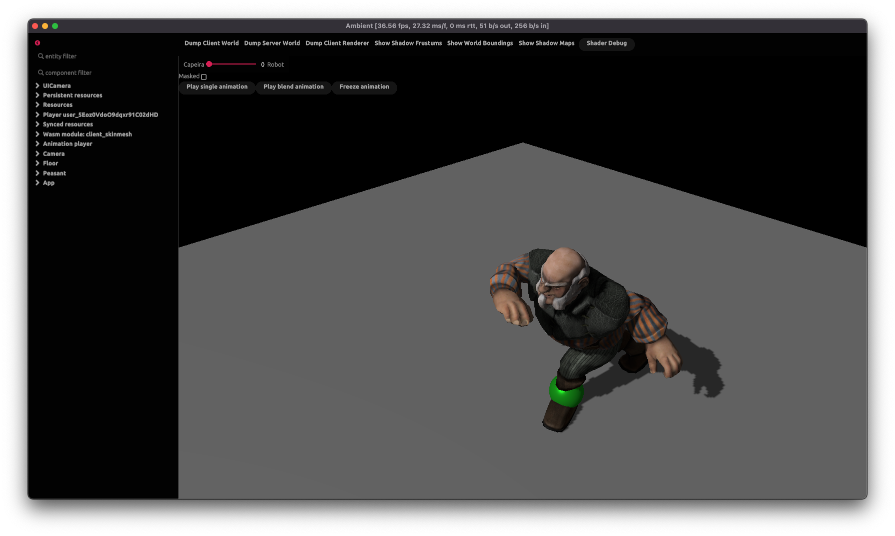
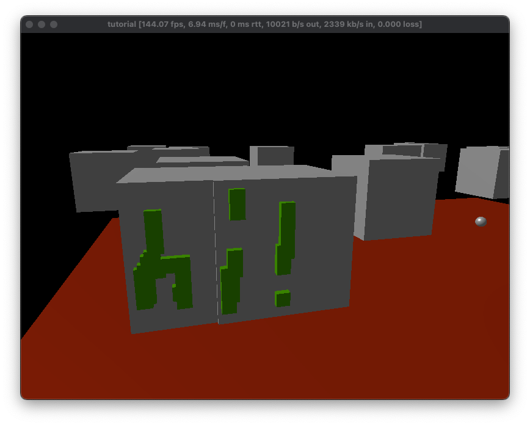
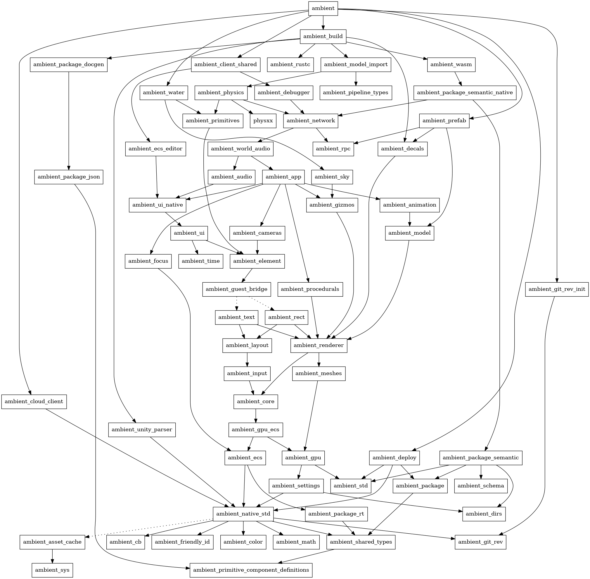

Introduction
Ambient is an open-source cross-platform runtime and platform for building, deploying and sharing high-performance multiplayer games on the web, desktop, and elsewhere. Powered by Rust, WebAssembly (WASM), and WebGPU, Ambient is cutting-edge while staying true to its goal: making game development both fun and accessible.
To set the scene: the Ambient runtime is an extensible multiplayer game engine with an in-game real-time database, automatic synchronization, Rust-inspired interoperable packages, an asset pipeline, WASM-powered isolation, PBR rendering, and more.
Data
At the core of Ambient lies an entity component system (ECS) that forms the backbone of its data model - it’s a real-time database for your game and everything running within it. Entities contain components, which are typed pieces of data, and these are acted upon with systems.
Networked components are automatically synchronized to all clients, ensuring a consistent experience across all players; instead of grappling with complex networking intricacies, developers can focus on building their server and client-side logic.
In Ambient, everything is an entity with components, including the data of the runtime itself, ensuring that nothing is off-limits and all is accessible to developers. If you can see the data, you can use it.
Packages
Experiences in Ambient are composed of packages, which are bundles of code, assets and schema definitions. Packages can communicate with each other seamlessly through their schemas, allowing for structured, dynamic interoperability. Packages can be mixed and matched to create unique experiences, making Ambient the ultimate sandbox for multiplayer game development.
Packages can be deployed to the platform for other users to make use of, or to build on top of. Ambient offers a Rust-inspired package manager and tooling. Users specify dependencies in their package’s manifest in a fashion similar to Cargo.toml. Rust programmers will feel at home, and non-Rust programmers will find the experience intuitive and easy to use.
Assets
All assets, including code, are streamed to players when they connect to the server; users do not have to download anything to start playing games immediately.
Ambient’s asset pipeline supports a wide range of formats, including .glb and .fbx. The asset pipeline is flexible and can be extended to support additional formats as required. This approach ensures that developers can use their preferred tools and workflows without having to worry about compatibility issues.
Code
WebAssembly (WASM) is the secret sauce that enables Ambient’s capabilities. Every package’s code in Ambient operates within the confines of WebAssembly, ensuring a high level of isolation. Ambient pushes WASM to its absolute limits; on the web, WASM is used both to run the Ambient runtime and to execute user code, making it one of the most ambitious WASM projects to date.
Safety and stability are paramount. Thanks to the power of WebAssembly, code for Ambient runs in isolation. This means that if something within a package crashes, it won’t bring down the entire program. Furthermore, the isolation provided by WebAssembly ensures that you can run untrusted code safely, enhancing security in multiplayer environments. This extends to embedding existing C/C++ libraries, which can be compiled to WebAssembly and used in Ambient packages.
Rendering
At the heart of the Ambient renderer lies WebGPU, a cutting-edge technology that unleashes the potential of modern graphics hardware on the Web and beyond. By default, the renderer supports Physically Based Rendering (PBR) and offers advanced features such as cascading shadow maps and seamless instancing.
In future, the renderer will be made extensible, so that developers can define the visual style of their games as they see fit. This approach ensures that Ambient can be used to create a wide range of experiences, from realistic simulations to stylized games.
Philosophy
Ambient’s philosophy is based around flexibility and experimentation, empowering developers to push the boundaries in the ultimate game development sandbox. As Ambient develops, more and more functionality will be moved from the runtime to the realm of developers, ensuring that there are no limits on creativity.
Fundamentally, we are excited about the future of game creation. We would like to see completely new forms of games emerging, which we believe will only happen when game creation tools evolve into the next generation. We hope to usher in this new era with Ambient.
We want to forge a game creation platform that unleashes your creative energy and empowers you to share that fiery passion with the world - so that, one day, we can experience your dreams-made-real for ourselves.
Installing
Native use of Ambient, for both developing and playing games, is easy. We have a version manager that will retrieve a pre-built version of Ambient for your platform. This is the recommended way to use Ambient.
The steps are as follows, where the commands are for your terminal of choice:
-
Install Rust. Note that the minimum supported version is 1.71.0, and you may need to update.
-
Add the
wasm32-wasitoolchain. This lets you compile Rust code for Ambient.rustup target add --toolchain stable wasm32-wasi -
Install the Ambient version manager:
cargo install ambient
The native client of Ambient currently runs on Windows, Linux and macOS.
Warning: If you are using Command Prompt on Windows, ensure that you do not have an
ambientexecutable in the directory that you are running the command from.This is because Command Prompt will prefer the local executable over the one installed by Cargo.
Next, try the tutorial to create your first Ambient game!
Setting up your IDE
Our recommended IDE is Visual Studio Code (VSCode).
Visual Studio Code (VSCode)
Install Visual Studio Code, then install the following plugins:
- rust-analyzer, as described here.
- CodeLLDB. This extension is optional, but enables package launching with F5 and will be used to provide debugging support in the future.
ambient new will set up your package for VSCode by default by creating a .vscode/settings.json for you.
Mac users: There is currently a bug which triggers a SIGHUP crash each time you close Ambient, when it’s started through VSCode. For a fix and more details, see this issue: https://github.com/AmbientRun/Ambient/issues/909
Emacs
There are multiple ways to configure Emacs as a Rust IDE. The following assumes you are using rustic, lsp-mode and rust-analyzer libraries. Robert Krahn provides a comprehensive guide to configuring Emacs for Rust development.
Once you have Emacs configured for general Rust development, you need to set some explicit values for Ambient packages. Ambient uses some custom cargo configuration values that Emacs and rust-analyzer need to know about. You can manually set these variables with the following elisp:
(setq lsp-rust-analyzer-cargo-target "wasm32-wasi"
lsp-rust-analyzer-cargo-watch-args ["--features" "client server"]
lsp-rust-features ["client" "server"])
Furthermore, you can add a .dir-locals.el file to your Ambient package directory that Emacs will pick up and load settings for. This is similar to the .vscode/settings.json that is created by default. This is an example .dir-locals.el file:
((rustic-mode . ((eval . (setq-local lsp-rust-analyzer-cargo-target "wasm32-wasi"))
(eval . (setq-local lsp-rust-analyzer-cargo-watch-args ["--features" "client server"]))
(eval . (setq-local lsp-rust-features ["client" "server"])))))
Other IDEs
To get rust-analyzer to work, you need to make sure it’s building with the server and client feature flags enabled. See .vscode/settings.json for an example.
Overview of Ambient
Let’s start with a rough overview of Ambient to give you an idea of how it works.
The database (ECS)
The most central thing in Ambient is the ECS “world”. You can think of it as a database that stores everything in your application.
The world is a collection of entities. An entity is a collection of components and a component is a
(name, value) pair. For example, you could have an entity with two components:
entity 1932:
- translation: (5, 2, 0)
- color: (1, 0, 0, 1)
If you compare this to a traditional SQL database, you can think of entities as rows and components as columns. Note that there is no equivalent of a table, though: any component can be attached to any entity.
Client/server
The next thing to know is that Ambient is built around a client/server architecture. Both the server and the client have a world of their own (green and blue boxes in the image below).

The server’s world is automatically replicated to all clients’ worlds. The clients can
add additional entities and/or components to their local world. Typically, you’ll
have game state on the server (for instance { unit: "orc", level: 10 }), and visual
effects or other client-local state on the clients (for instance, spawn fireworks when
the orc levels up).
Note that the replication is one-way. Any changes you make to your client world will not be replicated to the server. To communicate from the client to the server, you will typically use message passing instead.
Running examples
You can either run the examples from the latest released version of Ambient, or with the development main branch.
However, the version of Ambient must match the version that the examples were built for. For instance, if you are running the main branch of Ambient, you must also run the main branch of the examples.
We recommend that you use the examples from the Ambient website, as they have a version associated with them.
Running examples from main
- Clone the GitHub repository.
- Install Ambient with
cargo install --path app ambient. - Run the examples in the
guest/rust/exampledirectory:ambient run guest/rust/examples/basics/primitives
API
Reference documentation
The full API reference for Ambient can be found on docs.rs.
Note that the published API may not be up to date with the latest Git commit of the runtime - if you are using bleeding-edge features, you will need to document the API yourself using cargo doc -p ambient_api in the guest/rust folder.
Debugging
Running with the debugger
When the client is run with the AMBIENT_DEBUGGER environment variable, or with the --debugger flag, the game is surrounded with a debugger:
AMBIENT_DEBUGGER=1 ambient run examples/minigolf
# or `$env:AMBIENT_DEBUGGER=1` on Windows/PowerShell
# or `ambient run --debugger examples/minigolf`

These can be used to inspect the state of the client and server ECSes, as well as the renderer. When one of these buttons are pressed, a YAML file will be created with the corresponding state, and its path will be written to stdout:
[2023-02-23T17:47:36Z INFO ambient_debugger] Wrote "Ambient/tmp/server_hierarchy.yml"
Here is some sample output for the server ECS:
- "id=RsE148MNkdB24bFWQrfeMA loc=48:0":
"core::app::main_scene": ()
"core::ecs::children": "[EntityId(koK-dbeCZDrcHzsT7QELUw, 110383077981027712353063371358575952530)]"
"core::transform::translation": "Vec3(-5.0, -0.0019752309, 2.8536541)"
"core::transform::scale": "Vec3(1.0, 1.0, 1.0)"
"core::transform::rotation": "Quat(0.0, 0.0, 0.0, 1.0)"
"core::transform::local_to_world": "Mat4 { x_axis: Vec4(1.0, 0.0, 0.0, 0.0), y_axis: Vec4(0.0, 1.0, 0.0, 0.0), z_axis: Vec4(0.0, 0.0, 1.0, 0.0), w_axis: Vec4(-5.0, -0.001970334, 2.8387475, 1.0) }"
"core::transform::spherical_billboard": ()
children:
- "id=koK-dbeCZDrcHzsT7QELUw loc=46:0":
"core::app::main_scene": ()
"core::transform::local_to_world": "Mat4 { x_axis: Vec4(0.02, 0.0, 0.0, 0.0), y_axis: Vec4(0.0, -0.02, 1.7484555e-9, 0.0), z_axis: Vec4(0.0, -1.7484555e-9, -0.02, 0.0), w_axis: Vec4(-5.0, -0.001970334, 2.8387475, 1.0) }"
"core::transform::local_to_parent": "Mat4 { x_axis: Vec4(0.02, 0.0, 0.0, 0.0), y_axis: Vec4(0.0, -0.02, 1.7484555e-9, 0.0), z_axis: Vec4(0.0, -1.7484555e-9, -0.02, 0.0), w_axis: Vec4(0.0, 0.0, 0.0, 1.0) }"
"core::transform::mesh_to_local": "Mat4 { x_axis: Vec4(1.0, 0.0, 0.0, 0.0), y_axis: Vec4(0.0, 1.0, 0.0, 0.0), z_axis: Vec4(0.0, 0.0, 1.0, 0.0), w_axis: Vec4(0.0, 0.0, 0.0, 1.0) }"
"core::transform::mesh_to_world": "Mat4 { x_axis: Vec4(0.02, 0.0, 0.0, 0.0), y_axis: Vec4(0.0, -0.02, 1.7484555e-9, 0.0), z_axis: Vec4(0.0, -1.7484555e-9, -0.02, 0.0), w_axis: Vec4(-5.0, -0.001970334, 2.8387475, 1.0) }"
"core::rendering::color": "Vec4(1.0, 0.3, 0.3, 1.0)"
"core::ui::text": '"user_470i61dDp7FKjGFQetZ53O"'
"core::ui::font_size": "36.0"
"core::player::user_id": "..."
children: []
Increasing log output
You can also increase the logging output from specific internal modules using the RUST_LOG environment variable,
which accepts module=log_level pairs that are comma-sepparated. Here are some general tips:
- To debug your asset pipeline, set
RUST_LOG=ambient_build=info. For even more logs, you can setRUST_LOG=ambient_build=info,ambient_model_import=info. - To debug rendering, set
RUST_LOG=ambient_renderer=info. - To debug networking, set
RUST_LOG=ambient_network=info. - To debug physics, set
RUST_LOG=ambient_physics=info. - To debug everything, set
RUST_LOG=info. To get even more logs setRUST_LOG=debug.
Physics
Ambient uses PhysX 4.1 from Nvidia for physics simulation. As a result, the entire physics scene can be visualized using the PhysX Visual Debugger (PVD).
By default, physics debugging is on. To debug your scene, install and start PVD, then start an Ambient package. Your package’s scene should automatically be visible within PVD. For more details on how to use PVD, see the guide.
Assets
When assets are compiled by the assets pipeline, the resulting artifacts will be output to the build directory in your package. These can be examined to determine whether or not your source was accurately compiled by the asset pipeline.
Additionally, if there are fatal errors or warnings, the asset pipeline will report them during the compilation process.
Networking
Debugging which components are sent over the network
Use the environment flag AMBIENT_DEBUG_ENTITY_STREAM to debug entities and components sent over the network to the client. AMBIENT_DEBUG_ENTITY_STREAM=FULL will output everything, AMBIENT_DEBUG_ENTITY_STREAM=true (or anything else) will output a summary.
Profiling
Ambient supports profiling through puffin. To use it, follow these steps:
-
Build Ambient with profiling enabled (add the
profilefeature flag). From the root folder:cargo install --path app --features profile -
Install puffin_viewer:
cargo install puffin_viewer -
Start Ambient:
ambient run guest/examples/basics/primitives -
Start
puffin_viewer:puffin_viewer
You should now see real-time performance metrics for Ambient.
Settings
Ambient supports a number of settings that can be configured using the settings.toml file. This file is located under the platform’s config directory:
- Windows:
C:\Users\*USER*\AppData\Roaming\Ambient\Ambient\config\settings.toml - MacOS:
~/Library/Application\ Support/com.Ambient.Ambient/settings.toml - Linux:
~/.config/Ambient/settings.toml
Settings
[general]
user_id = String
api_token = String
[general.sentry]
enabled = bool
dsn = String
[render]
resolution = [int, int]
vsync = bool
render_mode = String # "MultiIndirect", "Indirect", "Direct"
software_culling = bool
Tutorial: Building a game from scratch
In this tutorial, our goal is to write a simple third-person shooter game and to demonstrate the capabilities of Ambient.
During this, we will show you the basic features of the engine, providing resources such as documentation, reference, examples, games, and more. At the end of the tutorial, you should have an understanding of how to use Ambient to make your own game.
If you run into any problems with the tutorial, please open an issue or join our Discord server and let us know.
Prerequisites
To start with, you will need to install Ambient. Follow the documentation on how to install (note that you will need to return to this page after installation).
If you are new to Rust, you can learn the basics of the language from the official Rust website. However, the API is designed to be easy to use, so you should be able to follow along even if you are new to Rust.
Tip: If you prefer other methods for installation, see here.
For the best experience, we recommend configuring your IDE for Ambient (see here).
⇾ Chapter 1: Creating a project
Chapter 1: Creating a package
To create a new Ambient project, type the following in your terminal of choice after having installed Ambient:
ambient new my_project
Note: Initial build times can be slow, especially on Windows, where Rust compilation is slower. Subsequent builds will be faster.
This will create a new Ambient package with the default template, which is set up for Rust and creates a quad and a camera.
In-depth: A package is a bundle of code and assets which can be deployed. Read more about packages here.
Enter the project folder by typing cd my_project, and then run it with:
ambient run
You should see a window like this:

Tip: You can also open the project in VS Code by typing
code .in the folder,code my_projectfrom the root folder, or using the right-click menu of your operating system if supported.
Tip: In VS Code, you can hit
F5to run the project.
Tip: Run with
--debuggerto show the debugger UI (i.e.ambient run --debugger). See the reference documentation on debugging for more info. In VS Code, you can switch to the “Debug” launch configuration and then pressF5to do the same.
If you would like to join the session from the same machine with a second client, you can run:
ambient join
However, within Ambient’s console output, a line should be present that looks like this:
Proxy allocated an endpoint, use `ambient join proxy-eu.ambient.run:9898` to joinThis can be used to quickly test a multiplayer game with another machine or with other people. Just copy the green text and send it to a friend to allow them to join your session.
Package structure
The basic structure of an Ambient package is as follows:
my_package/ambient.toml: This is where you define ECS components, messages and other data about your package.Cargo.toml: This is Rust’s equivalent ofambient.toml, which defines Rust-specific metadata like Rust dependencies and more.assets/: This folder contains all assets.pipeline.toml: A pipeline file decides how the assets will be processsed.
src/: This folder contains all source code.client.rs: This file contains the code that run on your player’s computers.server.rs: This file contains code that runs on the game server.
In-depth: You can read more about Ambient’s ECS in the ECS reference, and about Ambient’s asset pipeline in the asset pipeline reference.
Client and server?
Ambient targets multiplayer by default, which is why each new package comes with a server.rs and client.rs. Game logic is typically defined on the server, whereas the client forwards inputs and adds visual effects.
In-depth: For an introduction to the client-server architecture, go here.
Tip: Unsure about how to arrange your code? Check out where my code should go.
IDE setup
If you have installed the recommended VS Code tools, you should be able to hover your mouse over each concept or component to see the docs. The following screenshot is of server.rs:

This will also give you auto-completion and a few other handy tools.
Tip: Use
Ctrl-.(Windows, orCmd-.on macOS) to bring up VS Code suggestions, such as automatic imports. Note that you may have to save after the fix is applied to for any errors or warnings to be updated.
Source: The complete code for this chapter can be found here.
Challenge
Try creating some cubes and changing their translation(), scale(), and rotation() components.
Tip: You can refer to the primitives example in the Ambient GitHub repository.
Source: The complete code for this challenge can be found here.
⇾ Chapter 2: Player character
Chapter 2: Adding a player character
In this chapter, we’ll add a floor to the scene, and then a player character that can run around in the world.
Creating a floor
First, remove all code within fn main in server.rs, and replace it with the following:
#![allow(unused)] fn main() { Entity::new() .with(quad(), ()) .with(scale(), Vec3::ONE * 10.0) .with(color(), vec4(1.0, 0.0, 0.0, 1.0)) .with(plane_collider(), ()) .spawn(); }
This will create a basic ground plane for us. Note that you will have also removed the camera, so you will not be able to see the plane yet. That’s normal!
Tip: When you save the file, the components are likely to have red squiggly lines under the components; that’s because they haven’t been imported yet. Click one of them, then hit
Ctrl-.(orCmd-.on macOS) and choose “Import …”.
In-depth: Visit the full API reference docs for details on the use of
Entity,.withand.spawn.
In-depth: Entities are the basic unit in an ECS. You can think of the ECS as a database, where entities are rows, and components (
quad,scale,colorandplane_colliderin this case) are columns.Components are always pure data; they don’t have any functionallity on their own. Instead, you typically write queries that read and write from the ECS (systems). Read more about the ECS here.
Adding a player controller
Ambient supports dependencies, similar to Rust’s Cargo. To help you in your game-making journey, we’ve created several standard packages that you can use.
We’re going to use some of these packages to build our experience today. Start by adding the following to your ambient.toml:
[dependencies]
base_assets = { deployment = "79plwEq1A0N3t0ExBOMTPM" }
third_person_controller = { deployment = "yV6nlkxj25cmkBhd4koe8" }
character_animation = { deployment = "4nLmHfcAlZkvWbK0NANMoC" }
hide_cursor = { deployment = "2ejmKJKgh6b4pTnwWPdv4s" }
In-depth: To learn more about dependencies, check out the reference documentation.
Add the following code to server.rs:
#![allow(unused)] fn main() { spawn_query(is_player()).bind(move |players| { for (id, _) in players { entity::add_components( id, Entity::new() .with_merge(ThirdPersonController::suggested()) .with(model_from_url(), packages::base_assets::assets::url("Y Bot.fbx")) .with(basic_character_animations(), id), ); } }); }
Note: As before, you will need to import these components from their packages. You can use
Ctrl+.(orCmd+.on macOS) to do this.
In-depth: A
spawn_queryruns when an entity with a specific set of components is seen for the first time (including when it is spawned).Here, when a player spawns, we add a few components to that player to give it an animated model (
model_from_url), use basic character animations (basic_character_animations) and to make it react to input with a camera that follows the character (.with_merge(ThirdPersonController::suggested())).
Run your game by pressing F5 in VS Code (or by typing ambient run in your terminal).
You should now see something like this on the screen:

This character will respond to input, including moving around using WASD, jumping with Space, and looking around with the mouse.
Congratulations! You can now use this character as a base for the rest of the tutorial.
Source: The complete code for this chapter can be found here.
Challenge: Add a
camera_distancecomponent to-1.0for a first-person-like experience.Source: The complete code for this challenge can be found here.
⇾ Chapter 3: Scene
Chapter 3: Creating the scene
In this chapter, our goal is to create cube obstacles that the player has to walk around, and then we’ll rain bouncy balls down to add dynamism to the scene.
Adding some obstacles
Let’s add some basic obstacles to your game. Add the following code:
#![allow(unused)] fn main() { for _ in 0..30 { Entity::new() .with(cube(), ()) .with(cube_collider(), Vec3::ONE) .with( translation(), (random::<Vec2>() * 20.0 - 10.0).extend(1.), ) .spawn(); } }
This code will spawn 30 cubes with random positions. Try running it!
In-depth: A
cube_collideris one of the basic physics primitives. For more information, consult the reference documentation on physics, or try the physics example.
Challenge:
Entity::spawnwill return anEntityId. Try usingset_componentto set therotationof the cubes.
It should look something like this:

Creating a rain of bouncy balls
We can also spawn some interactive physics elements. Add the following to make it rain bouncy balls:
#![allow(unused)] fn main() { fixed_rate_tick(Duration::from_secs_f32(0.5), |_| { Entity::new() .with_merge(Sphere::suggested()) .with_merge(Transformable::suggested()) .with(scale(), Vec3::ONE * 0.2) .with( translation(), Vec3::X * 10. + (random::<Vec2>() * 2.0 - 1.0).extend(10.), ) .with(sphere_collider(), 0.5) .with(dynamic(), true) .spawn(); }); }
This code will spawn a bouncy ball at a semi-random position each frame, where Sphere and Transformable are concepts that provide the components required for a sphere that can be moved around.
In-depth: Here, we’re using a
Framemessage, which is sent by the runtime each frame. Learn more about messages in the reference documentation.
Try running this. You should see a rain of bouncy balls now!

However, there’s quite a big problem: the bouncy balls never expire, so the world keeps filling up. Let’s fix that.
To begin with, we’re going to add this to the ambient.toml:
[components]
bouncy_created = { type = "Duration" }
In-depth: Here, we’re defining a custom component. For more information on how component definitions work, as well as what they’re capable of, check out the reference documentation.
Next, we’re going to add the component to the bouncy balls. The with line needs to be placed before the spawn function, like so:
.with(sphere_collider(), 0.5)
.with(dynamic(), true)
+ .with(bouncy_created(), game_time())
.spawn();
In-depth: Components are added in the order that you specify them, so it’s possible to override an earlier component with a later one. In this case, it doesn’t matter where you place the
bouncy_createdcomponent as long as it’s prior to the entity being spawned.
Finally, add this code at the end of your main function:
#![allow(unused)] fn main() { query(bouncy_created()).each_frame(|entities| { for (id, created) in entities { if (game_time() - created).as_secs_f32() > 5.0 { entity::despawn(id); } } }); }
In-depth: Here, we see a query which runs every frame. It grabs all entities with the
bouncy_createdcomponent and removes all components that are older than 5 seconds.
Note: Ambient offers a
remove_at_game_timecomponent that will do this for you, but we’re using this as an example of how to write a component definition and query. As an example of how you would useremove_at_game_time, you can replace the above code with the following:.with(sphere_collider(), 0.5) .with(dynamic(), true) + .with(remove_at_game_time(), game_time() + Duration::from_secs(5)) .spawn();
Source: The complete code for this chapter can be found here.
⇾ Chapter 4: Player interaction
Chapter 4: Player interaction
It wouldn’t be much of a game if we didn’t have some player interaction though! Let’s add that.
A simple paint interaction
First, we’ll add a Paint message to our ambient.toml:
[message.Paint]
fields = { ray_origin = "Vec3", ray_dir = "Vec3" }
In-depth: Read more about defining your own messages in the reference documentation.
Next, we’ll add some code to the client.rs (for the first time in this tutorial!):
#![allow(unused)] fn main() { fixed_rate_tick(Duration::from_millis(20), move |_| { let Some(camera_id) = camera::get_active() else { return; }; let input = input::get(); if input.keys.contains(&KeyCode::Q) { let ray = camera::clip_position_to_world_ray(camera_id, Vec2::ZERO); Paint { ray_origin: ray.origin, ray_dir: ray.dir, } .send_server_unreliable(); } }); }
This code runs every 20 milliseconds, gets the active camera (and does nothing if it can’t), then checks if the Q key is pressed. If it is, it sends a Paint message to the server with the information required to perform a raycast to determine where to paint. The fixed_rate_tick is used to ensure that we don’t spam the server with messages on high frame rates.
In-depth: For a more detailed example of how to use screen rays, see the
screen_rayexample.
Let’s add this to our server.rs:
#![allow(unused)] fn main() { Paint::subscribe(|ctx, msg| { if ctx.client_user_id().is_none() { return; } let Some(hit) = physics::raycast_first(msg.ray_origin, msg.ray_dir) else { return; }; Entity::new() .with(cube(), ()) .with(translation(), hit.position) .with(scale(), Vec3::ONE * 0.1) .with(color(), vec4(0., 1., 0., 1.)) .spawn(); }); }
This code will listen for messages. For each message, it will ensure that the message came from the client and then perform a raycast; if it hits something, it will spawn a green cube at the hit position.
When you run it, you should now be able to “paint” by holding/pressing Q:

Source: The complete code for this chapter can be found here.
⇾ Chapter 5: Models
Chapter 5: Working with models
Games typically don’t just use cubes and spheres. Instead, they use 3D models. In this chapter, we’ll learn how to load and use 3D models in Ambient.
Let’s download this free sample model from the official glTF sample repository.
Click the little download icon to the right to download it.
Next, create a folder named assets in your project, and add the file to that folder (see package structure).
Create a file called pipeline.toml in the assets folder, with the following content:
[[pipelines]]
type = "Models"
sources = ["*.glb"]
Note that this should not go in your ambient.toml. Pipelines are separate and are folder-specific.
In-depth: To learn more about how asset pipelines work, consult the reference documentation.
Finally, let’s use the model. In our server.rs, add the following lines:
#![allow(unused)] fn main() { Entity::new() .with_merge(Transformable { local_to_world: Default::default(), optional: TransformableOptional { scale: Some(Vec3::ONE * 0.3), ..Default::default() }, }) .with(model_from_url(), packages::this::assets::url("AntiqueCamera.glb")) .spawn(); }
This creates a new entity with the AntiqueCamera model. This model will be loaded in on the client.
You should now see something like this:

Great! We’ve learned how to load models into Ambient.
Tip: Use
prefab_from_urlinstead ofmodel_from_urlif you also want to include a collider.This instantiates a prefab for the model that includes a collider. However, note that the antique camera here does not have a collider and you will need to consider adding a collider through the primitive colliders or through another source.
See the physics example.
Source: The complete code for this chapter can be found here.
⇾ Chapter 6: UI
Chapter 6: User interface (UI)
Many games rely on showing some kind of UI on top of the 3D game, so let’s try adding some basic UI to our game.
Showing the player’s position
Switch to client.rs, and add the following:
#![allow(unused)] fn main() { #[element_component] fn PlayerPosition(hooks: &mut Hooks) -> Element { let pos = use_entity_component(hooks, player::get_local(), translation()); Text::el(format!("Player position: {}", pos.unwrap_or_default())) } }
In-depth: UI in Ambient is loosely inspired by React. See the UI reference documentation for more information.
Tip: See the UI examples to learn how to use layout, buttons, editors and much more.
And then add this to the main function in client.rs:
#![allow(unused)] fn main() { PlayerPosition.el().spawn_interactive(); }
You should now see something like this:

Source: The complete code for this chapter can be found here.
Challenge: Try adding a
Button, which sends a message to the server and teleports the player somewhere else when clicked. You may find Chapter 4, the button example and the todo example useful.Source: The complete code for this challenge can be found here.
⇾ Chapter 7: Deploying
Chapter 7: Publishing your game
So you’ve got a small game built and want to share it with a friend. How do we do that?
Easy! All you need to do is run:
ambient deploy
Note: The first time you run it, it will raise an error that will tell you to create your user account and to generate and use an API token. Follow the instructions in the error message to do so.
Once your game is deployed, you can just go to the web URL provided and play it from there. You can send the URL to a friend, and they can join you there as well!
If a screenshot.png is present in the package’s directory, it will be used as the game’s thumbnail on the Ambient website. We recommend you include one.
Tip: Deploying with
ambient deploywill deploy to the Ambient servers. For more deployment options, including your own game servers, see the reference documentation on distribution.
⇾ Chapter 8: Modding
Chapter 8: Modding
In this final chapter, we’ll look at modding. All games are moddable by default with Ambient.
Adding the Mod Manager UI
We’ll start by adding the Mod Manager UI package to your game, so that you can list and enable mods for your game. Start by adding the following to your ambient.toml’s dependencies:
package_manager = { deployment = "2nkcSe373rR3IdVwxkKHkj" }
(To find the latest deployment, visit the page for the package mananger.)
Then add this to the top of your server.rs’s main function:
#![allow(unused)] fn main() { entity::add_component( package_manager::entity(), package_manager::components::mod_manager_for(), packages::this::entity(), ); }
Launch your game, and then press F4 to open the Mod Manager. From here, you can enable and disable mods. As your package is brand-new, there won’t be any mods available yet. Let’s fix that.
Note: You can build your own Mod Manager UI if you want to. You can see the source code for the default one here.
Creating a mod
To create a mod for your game, run ambient new my_mod --rust empty, then update the ambient.toml of the mod with this:
# Note: Add this field, or replace it if it already exists, making sure to update the ID:
content = { type = "Mod", for_playables = ["the_id_of_your_game_from_its_ambient_toml"] }
[dependencies]
# Note: This line will make it possible to run the mod locally, as it will pull in your game as a dependency.
# Replace LATEST_DEPLOYMENT_ID with the latest deployment ID of your game, which can be found on the game's page.
# When you want to deploy the mod, comment this line out first
my_game = { deployment = "LATEST_DEPLOYMENT_ID" }
You can now edit and run the code in src/, as per usual. Once you’re happy with your mod, you can deploy it with ambient deploy, just like with the game. Providing a screenshot.png is recommended to make sure your mod stands out.
Remember to comment out the my_game = .. line before deploying.
This concludes the Ambient tutorial. Thanks for following along! If you have any questions, feel free to join our Discord server and ask away.
Source: The complete code for this chapter can be found here.
Getting content for your game
Content, including assets, is a key part of any game. For a polished game, you will likely want to build your own content. However, for prototyping, or for a game jam, you may want to use existing content.
This page lists some sources of content that you can use in your game. Some of these may have already been uploaded as packages to the platform; check there first before importing the content yourself.
For details on how to import the content, see asset pipeline.
Characters and animations
Models
- OpenGameArt: Creative commons licensed.
- Kenney: Creative commons licensed.
- Unity asset store: Lots of content. The Ambient asset pipeline supports importing Unity models. However, ensure that the license allows you to use the content in your game.
- Quixel: Realistic scanned models. The asset pipeline supports importing Quixel models. However, ensure that the license allows you to use the content in your game.
- Sketchfab: Many models.
- Polyhaven: The Public 3D Asset Library.
- Official GLTF sample models
Materials & Textures
- Ambientcg.com: Many materials.
- Gametextures: Signup to get some freebie textures.
Audio
- Freesound.org: Lots of sounds, including both recordings and synthesized sounds.
- 8bit Sound Generator: You have full rights to all sounds made with bfxr, and are free to use them for any purposes, commercial or otherwise.
- Boomlibrary: Paid. Lots of game sounds and packages.
- WeLoveIndies.com: Paid. Lots of game sounds and music.
Collections
- awesome-cc0: A list of Creative Commons 0 (CC0) licensed assets. These assets can be used for any purpose, including commercially.
Runtime
Coordinate system
By default, Ambient uses a right-handed coordinate system for normalized device coordinates (NDC) with z from 1 to 0 (i.e. reverse-z with the near plane at z=1, and the far plane at z=0).
For world coordinates, it uses a left-handed system. We consider x to be right, y to be back, and z to be up (same as Unreal). Note that this means forward is -y, not +y or +z!
This means that the default camera without any transformation is lying on its stomach and facing downwards.
NDC:
y
|
|
0 ---> x
/
z (coming out of the screen)
World:
z (up)
|
0 --- x (right)
/
y
WebGPU uses positive-y as up in its NDC, and z from 0 to 1 (https://gpuweb.github.io/gpuweb/#coordinate-systems) - that is, it is left-handed.
Freya Holmér has produced an overview of which programs use which coordinate systems, which can be found here.
For more information on our use of reverse-z, consult the following links:
- https://developer.nvidia.com/content/depth-precision-visualized
- https://www.danielecarbone.com/reverse-depth-buffer-in-opengl/
Package
All Ambient packages must have an ambient.toml manifest that describes their functionality. This format is in flux, but is inspired by Rust’s Cargo.toml.
Next to the ambient.toml, other files may be present. A screenshot.png can be used to provide a thumbnail for the package on the Ambient website. A README.md can be used to provide a description of the package on the Ambient website.
To view documentation for a package, add --open-docs to a command that builds packages (i.e. ambient build/run/serve/...). This documentation is autogenerated and contains all items available to that package.
Package definitions are “projected” to guest code, so that they can use them. For Rust, this is done through the use of a build script that generates a src/packages.rs, creating a packages module that contains all the packages known to the package, including itself. Your own package can be accessed through packages::this.
Reference
SnakeCaseIdentifiers are snake-case ASCII identifiers (as a string)PascalCaseIdentifiers are PascalCase ASCII identifiers (as a string)Identifiersare either aSnakeCaseIdentifieror aPascalCaseIdentifierbased on contextItemPaths are a double-colon-separated list ofSnakeCaseIdentifiers followed by a singleIdentifier. For example,my_packageis anIdentifier, andmy_package::my_componentis anItemPath.- See
ValueTypefor a description of the types that can be used in Ambient.
Package / [package]
The package section contains metadata about the package itself, such as its name and version.
| Property | Type | Required | Description |
|---|---|---|---|
id | SnakeCaseIdentifier | ✅ | The package’s ID. Autogenerated by Ambient. Do not attempt to specify your own ID. |
name | String | ✅ | A human-readable name for the package. |
version | String | ✅ | The package’s version, in (major, minor, patch) format. Semantically versioned. |
content | PackageContent | ✅ | A description of the content of this Package. See below. |
ambient_version | String | ✅ | The version of Ambient this package is intended to be used with. |
authors | String[] | The authors of the package. | |
description | String | A human-readable description of the package. | |
repository | String | Where the source code for this package can be found. | |
public | Bool | Indicates if this package will be publicly available when deployed. Defaults to true. |
PackageContent
These are the valid configurations for package content:
# A Playable is anything that can be run as an application; i.e. games, examples, applications etc.
content = { type = "Playable" }
content = { type = "Playable", example = true } # example defaults to false
# Assets are things you can use as a dependency in your package
content = { type = "Asset", models = true, textures = true } # Contains models and textures
# These are the valid asset types:
#
# models
# animations
# textures
# materials
# audio
# fonts
# code
# schema
#
# You can use any combination of them
# Tools are things you can use to develop your package
content = { type = "Tool" }
# Mods are extension to Playables
content = { type = "Mod", for_playables = ["i3terk32jw"] }
Example
#
# The package section describes all package metadata.
#
[package]
id = "d563xtcr72ovuuhfkvsgag6z3wiy5jwr"
name = "My Cool Package"
version = "0.0.1"
content = { type = "Asset", code = true }
ambient_version = "0.3.0"
# The following are optional:
# authors = ["Cool Cat"]
# description = "A sample package that's the coolest thing ever."
# repository = "https://my-cool-forge.io/my-cool-package"
# public = true
Build / [build]
The build section contains settings related to building the package.
Rust Settings / [build.rust]
| Property | Type | Required | Description |
|---|---|---|---|
feature-multibuild | String[] | An array of strings defining the Rust features to be used when building the package. This is used to build the same code for both client and server.cargo build will be run with each of these features to produce a separate WASM binary, which is then componentized and copied into a folder of the corresponding name in build/.Client and server are built by default (e.g. ["client", "server"]); this is exposed so that you can disable building one side entirely if required. |
Example
[build.rust]
feature-multibuild = ["client", "server"]
Components / [components]
The components section contains custom components defined by the package. Components are used to store data on entities.
This is a TOML table, where the keys are the component IDs (SnakeCaseIdentifier), and the values are the component definitions.
| Property | Type | Required | Description |
|---|---|---|---|
type | ValueType | ✅ | The type of the component. |
name | String | A human-readable name for the component. | |
description | String | A human-readable description of the component. | |
attributes | ComponentAttribute[] | An array of attributes for the component. |
A ComponentAttribute is a string that can be one of the following:
Debuggable: this component can have its debug value printed, especially in ECS dumpsNetworked: this component is networkedResource: this component will only ever be used as a resource; will error if attached to an entityMaybeResource: this component can be used as a resource or as a component; necessary if treating this component as a resourceStore: this component’s value should be persisted when the world is saved
Example
[components]
# Inline tables can be used.
cool_component = { type = "I32", name = "Cool Component", description = "A cool component", attributes = ["Debuggable"] }
# Explicit tables can also be used.
[components.cool_component2]
type = "I32"
name = "Cool Component 2"
description = "A cool component 2"
attributes = ["Debuggable"]
Concepts / [concepts]
The concepts section contains custom concepts defined by the package. Concepts are used to define a set of components that can be attached to an entity. For more information on how to use concepts, see the ECS documentation.
This is a TOML table, where the keys are the concept IDs (CamelCaseIdentifier), and the values are the concept definitions.
| Property | Type | Required | Description |
|---|---|---|---|
name | String | A human-readable name for the concept. | |
description | String | A human-readable description of the concept. | |
extends | String[] | An array of concepts to extend. Must be defined in this package manifest. | |
components.required | Map<ItemPath, ConceptValue> | ✅ | An object containing the required components for this concept, and any associated information about the use of the component in this concept (see below). |
components.optional | Map<ItemPath, ConceptValue> | An object containing the optional components for this concept, and any associated information about the use of the component in this concept (see below). These components do not need to be specified to satisfy a concept, but may provide additional control or information if available. |
The components is an object where the keys are ItemPaths of components defined in the package manifest, and the values are ConceptValues.
ConceptValues are a TOML table with the following properties:
| Property | Type | Required | Description |
|---|---|---|---|
description | String | A human-readable description of the component in the context of the concept, which may be different to the component’s description. | |
suggested | toml::Value | If specified, the suggested value for this component in this concept. This is merely a suggestion, but must match the type of the component.Mat4 and Quat support Identity as a string, which will use the relevant identity value for that type.F32 and F64 support PI, FRAC_PI_2, -PI, and -FRAC_PI_2 as string values, which correspond to pi (~3.14), half-pi (~1.57), and negative versions respectively. |
Example
[concepts.Concept1]
name = "Concept 1"
description = "The best"
[concepts.Concept1.components.required]
cool_component = {}
# A concept that extends `concept1` and has both `cool_component` and `cool_component2`.
[concepts.Concept2]
extends = ["Concept1"]
[concepts.Concept2.components.required]
cool_component2 = { suggested = 42 }
[concepts.Concept2.components.optional]
cool_component3 = { suggested = 42 }
Messages / [messages]
The messages section contains custom messages defined by the package. Messages are used to communicate between client and server, or between packages/modules on the same side.
For an example of how to use messages, see the messaging example.
This is a TOML table, where the keys are the message IDs (PascalCaseIdentifier), and the values are the message definitions.
| Property | Type | Required | Description |
|---|---|---|---|
description | String | A human-readable description of the message. | |
fields | Map<SnakeCaseIdentifier, ValueType> | ✅ | An object containing the fields and their types. Must be one of the types supported for components. |
Example
[messages.Input]
description = "Describes the input state of the player."
[messages.Input.fields]
# Each field in the message must have a type.
direction = "Vec2"
mouse_delta_x = "F32"
Enums / [enums]
The enums section contains custom enums defined by the package. Enums are used to define a closed set of values.
This is a TOML table, where the keys are the package IDs (PascalCaseIdentifier), and the values are the package definitions.
| Property | Type | Required | Description |
|---|---|---|---|
description | String | A human-readable description of the enum. | |
members | Map<PascalCaseIdentifier, String> | ✅ | An object containing the members and their descriptions. The description can be empty. |
Example
[enums.CakeBakeState]
description = "Describes the state of a cake bake."
[enums.CakeBakeState.members]
GatheringIngredients = "Gathering ingredients"
MixingIngredients = "Mixing ingredients"
Baking = "Baking"
Cooling = "Cooling"
Decorating = "Decorating"
Done = "Done"
Includes / [includes]
The includes section contains a list of manifests to pull in under a given name. This is useful for splitting up a package into multiple files.
This is a TOML table, where the keys are the name that you want to access this include by (SnakeCaseIdentifier), and the location of the package manifest is the value.
Example
[includes]
graphics = "graphics/ambient.toml"
Dependencies / [dependencies]
The dependencies section contains a list of package IDs that this package depends on.
Depending on another package gives you access to its items, including its components, concepts, messages, and enums. It can also provide access to any assets that the package has.
This is a TOML table, where the keys are the name that you want to access this package by (SnakeCaseIdentifier), and the location of the package is the value.
To access an item from a package, use the following syntax: import_name::item_id. For example, if you have a package imported with the name the_basics and an enum with ID BasicEnum, you can access it with the_basics::BasicEnum.
At least one of path or (id and version) must be specified.
| Property | Type | Description |
|---|---|---|
path | String | A relative path to the package to depend on. |
id | String | The ID of a package to depend on. Must be combined with version. |
version | String | The version of a package to depend on. Only exact versions are currently supported. Must be combined with id. |
enabled | bool | Control whether or not logic associated with this package should be enabled on load. Enabled by default. |
For an example of how to use dependencies, see the dependencies example.
Example
[dependencies]
the_basics = { path = "../basics" }
[components]
my_component = { type = "the_basics::BasicEnum" }
Runtime access to packages
Packages are represented as entities within the ECS, with their metadata being stored as components. This means that you can access the metadata of a package at runtime. To do so, you can use the entity() function inside the generated Rust code for the package:
use ambient_api::prelude::*; #[main] fn main() { dbg!(entity::get_all_components(packages::this::entity())); }
Or by querying for entities that have the is_package component:
use ambient_api::{ core::package::components::{is_package, name}, prelude::*, }; #[main] fn main() { let q = query((is_package(), name())).build(); // List all packages and their names. dbg!(q.evaluate()); }
ValueType
In Ambient, all typed values must have a type that belongs to ValueType. This includes component types and message fields.
A ValueType is either:
-
a string that can be one of the following primitive types:
Bool: a boolean value, true or falseEmpty: a component that has no value; most often used for tagging an entityEntityId: an entity IDF32: a 32-bit floating point valueF64: a 64-bit floating point valueMat4: a 4x4 32-bit floating point matrixQuat: a 32-bit floating point quaternionString: a UTF-8 stringU8: an 8-bit unsigned integer valueU16: an 16-bit unsigned integer valueU32: a 32-bit unsigned integer valueU64: a 64-bit unsigned integer valueI8: an 8-bit signed integer valueI16: an 16-bit signed integer valueI32: a 32-bit signed integer valueI64: a 64-bit signed integer valueUvec2: a 2-element 32-bit unsigned integer vectorUvec3: a 3-element 32-bit unsigned integer vectorUvec4: a 4-element 32-bit unsigned integer vectorIvec2: a 2-element 32-bit signed integer vectorIvec3: a 3-element 32-bit signed integer vectorIvec4: a 4-element 32-bit signed integer vectorVec2: a 2-element 32-bit floating point vectorVec3: a 3-element 32-bit floating point vectorVec4: a 4-element 32-bit floating point vectorDuration: A time span. Often used as a timestamp, in which case it designates the duration since Jan 1, 1970.
-
a contained type of the form
{ type = "Vec", element_type = ValueType }or{ type = "Option", element_type = ValueType }- Note that
VecandOptionare the only supported container types, andelement_typemust be a primitiveValueType(that is, you cannot have nested contained types).
- Note that
-
a string that refers to an
enumdefined by a package; see Enums.
Note that ValueTypes are not themselves values, but rather types of values. For example, Vec2 is a ValueType, but Vec2(1.0, 2.0) is a value of type Vec2. Additionally, ValueTypes from other packages can be referred to using ItemPaths: my_package::my_component::MyType.
WebAssembly
All .wasm components in the build/{client, server} directory will be loaded for the given network side. The .wasm filenames must be snake-case ASCII identifiers, like the id in the manifest.
This means any .wasm which implements the Ambient WIT interface and targets WASI snapshot 2 (or uses an adapter that targets WASI snapshot 2) should run within Ambient.
As a convenience for Rust users, Ambient will automatically build a Cargo.toml if present at the root of your package, as wasm32-wasi for the features specified in build.rust.feature-multibuild in ambient.toml (defaults to client and server).
The default new package template will create client.rs and server.rs files, with a Cargo.toml preconfigured with targets for both. The resulting WASM bytecode files are then converted to a component and placed in build/{client, server}.
The process it takes is equivalent to these commands:
cd your_package
cargo build --target wasm32-wasi --features client
wasm-tools component new target/wasm32-wasi/debug/your_package_client.wasm -o build/client/your_package.wasm --adapt wasi_snapshot_preview1.command.wasm
cargo build --target wasm32-wasi --features server
wasm-tools component new target/wasm32-wasi/debug/your_package_server.wasm -o build/server/your_package.wasm --adapt wasi_snapshot_preview1.command.wasm
using wasm-tools and a bundled version of the preview1-to-preview2 WASI adapter.
Rust
Rust is a first-class language for Ambient packages. The default new package template will create client.rs and server.rs files, with a Cargo.toml preconfigured with targets for both.
The API provides a #[main] attribute macro that generates code to allow you to access the data and functionality of the packages known to your package. All packages, including your own, will be in the packages module.
Restrictions
When running locally, guest code can:
- use WASI filesystem APIs (e.g.
std::fsin Rust) to read and write files in thedatadirectory of the built package - use the Ambient HTTP APIs (e.g.
httpin Rust) to make HTTP GET/POST requests to arbitrary servers
This functionality is disabled when the server is running on a hosted environment (i.e. Ambient deployments) for security reasons. To test if your logic still works in a hosted environment, run Ambient with the AMBIENT_HOSTED environment variable set to anything (e.g. AMBIENT_HOSTED=1 ambient run).
Entity Component System (ECS)
An entity component system (ECS) is an architectural pattern that is used in game development to organize the logic of a game. It is a data-oriented approach to programming, which means that it focuses on the data that is being processed, rather than the logic that is processing it.
The ECS pattern is based on three concepts: entities, components, and systems. Entities are the objects that exist in the game world. Components are the data that describe the entities. Systems are the logic that processes the components.
Conceptually, the ECS can be considered to be a database, where the entities are the rows, the components are the columns, and the systems are the queries. The ECS is designed to be fast and efficient, and is used in many modern game engines.
In addition to the three core concepts, Ambient also supports concepts, which are a way of defining a collection of components that correspond to some concept in the game world. For example, a Player concept might be defined as a collection of components that describe the player’s health, inventory, and position.
Entities
Entities are the objects that exist in the game world. They consist of a unique identifier (an EntityId, which is 128 bits) and a set of components. Entities are created and destroyed dynamically during runtime.
Components
Components are pieces of data that can be attached to entities. They store information like health, position, velocity, and more. Components are defined in the package manifest, and are attached to entities at runtime.
They are defined in the manifest (and not your codebase) so that other packages that depend on your package can use them when interacting with the ECS. Additionally, this means that component definitions are not tied to a specific language, and can be used in any language that supports the runtime.
For more detail on what components can be, see the package manifest reference. Note that component types cannot be nested - you cannot have a component that is a Vec of Vecs.
Attributes
Components can have attributes that modify their behavior. These attributes are defined in the package manifest, and are used by the runtime to determine how to handle the component.
Debuggable
This component can have its debug value printed. This is most often used for ECS dumps, but can also be used for debugging purposes.
Networked
This component is networked to the client. This means that the component’s value will be sent to the client when the component is created, and whenever the component’s value changes.
Note that a component that is Networked on the client will not be networked to the server. Ambient’s ECS networking is strictly server to client; to send data from the client to the server, you must use messages.
Resource
This component will only ever be attached to the entity::resources() entity, which is always present in the world. This is useful for storing global state that is not tied to a specific entity.
This component will error when attached to any other entity. Note that the resources entity is not networked; if you want networked global state, consider using entity::synchronized_resources().
MaybeResource
This component can be used as either a resource or as a component. This is useful for components that are traditionally attached to entities, but are sometimes attached to the resource entity.
This is most commonly used for components that are used in the resources of a prefab to provide metadata about the prefab. It is unlikely you will need to interact with this directly as a user.
Store
This component’s value will be stored in the world file. This is useful for components that store persistent state, like the player’s inventory.
At present, Ambient does not support persistency. This functionality will be added in the future.
Systems
Systems are the logic that processes the components. Ambient guest code cannot directly define systems; instead, they rely on queries that run every frame. These function identically to systems for now, but systems may be formally introduced in the future to allow for more advanced functionality, including automatic parallelism of the ECS.
Queries are powerful, and can be used to query for entities that have a specific component, or a specific set of components. At present, they are entirely structural, so they cannot be used to query for entities that have a specific value for a component.
There are three types of queries in Ambient at present: general queries, (de)spawn queries, and change queries.
General queries are the most common type of query. They are used to query for entities that have a specific set of components:
#![allow(unused)] fn main() { query((player(), player_camera_ref(), translation(), rotation())).each_frame(move |players| { for (_, (_, camera_id, pos, rot)) in players { let forward = rot * Vec3::X; entity::set_component(camera_id, lookat_target(), pos); entity::set_component(camera_id, translation(), pos - forward * 4. + Vec3::Z * 2.); } }); }
Spawn queries are used to query for when specific components are added to entities (including the entire entity being spawned). They are useful for spawning entities when a player joins the game; for example:
#![allow(unused)] fn main() { spawn_query(player()).bind(move |players| { // For each player joining, spawn a random colored box somewhere for _ in players { Entity::new() .with_merge(Transformable::suggested()) .with(cube(), ()) .with(translation(), rand::random()) .with(color(), rand::random::<Vec3>().extend(1.0)) .spawn(); } }); }
Despawn queries are similar to spawn queries, but track the removal of components from entities (including the entire entity being despawned). They are useful for cleaning up entities when a player leaves the game; for example:
#![allow(unused)] fn main() { despawn_query(user_id()).requires(player()).bind(move |players| { for (_, user_id) in players { println!("Player {user_id} left"); } }); }
Finally, change queries are activated when one of the components they track change. Note that the components that are returned by the query are separate from the components that are tracked; this allows you to get more information about the entity than just the components that changed.
#![allow(unused)] fn main() { change_query((user_id(), health())).track_change(health()).requires(player()).bind(move |players| { for (_, (user_id, health)) in players { println!("Player {user_id} now has {health} health"); } }); }
In addition to specifying components in the query, you can also specify components that must be needed using .requires or components that must not be present using .excludes. These are useful for filtering out entities that should not be processed by the query.
Concepts
Concepts are defined in the package manifest, and are used to define a collection of components that correspond to some concept in the game world. For example, a Player concept might be defined as a collection of components that describe the player’s health, inventory, and position.
Concepts have an ID (specified as the name of their TOML table), a name, a description, and required/optional components. Additionally, they can extend other concepts, which will cause them to inherit the components of the concepts they extend. Anything that is defined in the concept will override the definition in the concept it extends.
Required components must be present for an entity to satisfy a concept, while optional components are not required and can be used to provide additional information about the entity. As an example, a CharacterAnimation concept may require components to drive it, but can offer optional components as a way of configuring which animations should be used.
When specifying a concept’s components, the following optional parameters are available:
suggested: A suggested default for the value of the component. This is shown in documentation.description: A description of the component in the context of the concept, which may be different to the component’s description. This can be used to clarify how a component may be used within a concept. This is shown in documentation.
These do not need to be specified, but are useful for providing additional information about the component.
For illustration, here are two concepts that are defined as part of Ambient’s default manifest:
[concepts.Transformable]
name = "Transformable"
description = "Can be translated, rotated and scaled."
[concepts.Transformable.components.required]
local_to_world = { suggested = "Identity" }
[concepts.Transformable.components.optional]
translation = { suggested = [0.0, 0.0, 0.0] }
rotation = { suggested = [0.0, 0.0, 0.0, 1.0] }
scale = { suggested = [1.0, 1.0, 1.0] }
[concepts.Camera]
name = "Camera"
description = "Base components for a camera. You will need other components to make a fully-functioning camera."
extends = ["transform::Transformable"]
[concepts.Camera.components.required]
near = { suggested = 0.1 }
projection = { suggested = "Identity" }
projection_view = { suggested = "Identity" }
active_camera = { suggested = 0.0 }
"transform::local_to_world" = { suggested = "Identity" }
"transform::inv_local_to_world" = { suggested = "Identity" }
[concepts.Camera.components.optional]
"app::main_scene" = { description = "Either the main or UI scene must be specified for this camera to be used." }
"app::ui_scene" = { description = "Either the main or UI scene must be specified for this camera to be used." }
"player::user_id" = { description = "If set, this camera will only be used for the specified user." }
In this example, the “Camera” concept contains all of the components from a transformable, as well as components of its own. This means that any entity that has the “camera” concept will also have the components from the “Transformable” concept.
In your Rust code, this will be represented as a struct that contains the components that are defined in the concept. This is generated as part of the package projection that enables other Ambient functionality within your Rust code. It will be present within src/packages.rs.
For example, the Camera concept will generate a struct that looks like this:
#![allow(unused)] fn main() { #[derive(Clone, Debug)] pub struct Camera { pub local_to_world: Mat4, pub near: f32, pub projection: Mat4, pub projection_view: Mat4, pub active_camera: f32, pub inv_local_to_world: Mat4, pub optional: CameraOptional, } #[derive(Clone, Debug, Default)] pub struct CameraOptional { pub translation: Option<Vec3>, pub rotation: Option<Quat>, pub scale: Option<Vec3>, pub main_scene: Option<()>, pub ui_scene: Option<()>, pub user_id: Option<String>, } }
The Concept struct implements the Concept trait, which offers several operations. Each of these fields represents a specific component from the concept.
This struct can be filled out with values and then converted to an Entity using the Concept::make method, or spawned using Concept::spawn.
Alternatively, it can be populated using the Concept::get_{un}spawned method, allowing for easy retrieval of all of the values of a concept from an entity or the ECS.
If all components of a Concept have a suggested value supplied, an implementation of the ConceptSuggested trait will be generated, allowing you to use ConceptSuggested::suggested to get that concept with all of its suggested values.
As an example, a Camera can be spawned using the following code:
#![allow(unused)] fn main() { let camera = Camera { local_to_world: Mat4::IDENTITY, near: 0.1, projection: Mat4::IDENTITY, projection_view: Mat4::IDENTITY, active_camera: 0.0, inv_local_to_world: Mat4::IDENTITY, optional: CameraOptional::default(), }.spawn(); // This would also work, as the `Camera` concept has // suggested values for all of its components. let camera = Camera::suggested().spawn(); }
For more information, consult the API documentation on the Concept trait.
Messages
Ambient supports message passing between client and server, and from package to package. Message types are defined in the ambient.toml (see the reference); these types can then be subscribed to and sent as needed.
Subscribing to messages
Use the MessageName::subscribe method to subscribe to messages. This method is part of the ModuleMessage and RuntimeMessage traits, and has a slightly different syntax depending on whether you are subscribing to a module or runtime message.
Dispatching a message
Construct the message (a struct) and send it using one of the appropriate methods for your class of message. As an example, to send a package-defined MyMessage to all local packages (i.e. packages on “this side”):
#![allow(unused)] fn main() { MyMessage { some_field: 4. }.send_local_broadcast(); }
Defining new messages
New messages can be defined in ambient.toml:
[messages.MyMessage]
fields = { some_field = "F32" }
Read more in the package documentation.
Using messages from other packages
Add a dependency to your package manifest,
pointing to the other package. It will then be available to your package to use underneath
the packages module; there is no difference in use between a message defined in your
package and one defined in another package.
Of note is that you can get the entity representing a package using the entity function
defined for all packages (i.e. packages::my_dependency::entity()); messages can then be
sent to that entity, ensuring that only it will handle the message.
Models
Models are 3D objects (characters, vehicles, buildings, etc) that can be rendered to the screen. They can be loaded from files, or procedurally generated.
Importing a model
To use a model in Ambient, place it in the assets folder, and then create a assets/pipeline.toml file:
[[pipelines]]
type = "Models"
See asset pipeline for more details.
Spawning a model
The model can then be spawned using prefab_from_url, assuming that output_prefabs is enabled in your assets/pipeline.toml file (it is enabled by default). Assuming your package is named my_package:
#![allow(unused)] fn main() { Entity::new() .with_merge(Transformable::suggested()) .with(prefab_from_url(), packages::my_package::assets::url("MyModel.fbx")) .spawn(); }
The prefabs generated by the pipeline include the visual model and physics colliders.
If the code above lives in your server.rs file, it will create the physics colliders on the server.
The model, including any skeletons it may have, will always be loaded and spawned on the clientside, regardless of if the above code lives in server.rs or client.rs. It is not guaranteed that the model will be loaded on the server, so you should not rely on it being there.
You can also use model_from_url to load a model without the physics colliders.
Animating a model
See animations.
Getting models for your project
See getting content for a list of places where you can get models.
Manipulating bones
You can get individual bones of a loaded model using the animation::get_bone_by_bind_id function.
#![allow(unused)] fn main() { let unit_id = Entity::new() .with_merge(Transformable::suggested()) .with(prefab_from_url(), packages::my_package::assets::url("MyModel.fbx")) .spawn(); let left_foot = animation::get_bone_by_bind_id(unit_id, &BindId::LeftFoot).unwrap(); entity::set_component(left_foot, rotation(), Quat::from_rotation_x(0.3)); }
This will only work on the client at present, as the skeleton is not loaded on the server.
Hierarchies and transforms
Ambient supports hierarchies of entities using the parent and children components. The user only specifies the parent component; the children are automatically derived from the existing parents.
As an example, the following entities in the ECS
entity a:
entity b:
- parent: a
entity c:
- parent: a
will produce the hierarchy:
entity a
entity b
entity c
The entity::add_child and entity::remove_child functions can be used to add and remove children from a parent.
When using the model_from_url or prefab_from_url components, the entire model sub-tree will be spawned in, with the root of the sub-tree being added as a child to the entity with the component. Each entity in the sub-tree will be part of the hierarchy using their own parent and children components.
Transforms in hierarchies
Hierarchies are commonly used for transforms where a root entity is moved around and all its children should move with it.
To apply transforms to a hierarchy, local_to_parent must be used:
entity a:
- local_to_world: Mat4(..)
entity b:
- parent: a
- local_to_parent: Mat4(..)
- local_to_world: Mat4(..)
In this case, b.local_to_world will be calculated as a.local_to_world * b.local_to_parent.
local_to_world and local_to_parent are the only matrices necessary here. However, it is often more convenient to work with translation, rotation and scale components:
entity a:
- local_to_world: Mat4(..)
- translation: vec3(5., 2., 9.)
- rotation: quat(..)
- scale: vec3(0.5, 0.5, 1.)
entity b:
- parent: a
- local_to_parent: Mat4(..)
- local_to_world: Mat4(..)
- translation: vec3(-2., 0., 0.)
- rotation: quat(..)
- scale: vec3(1., 2., 1.)
In this case, the local_to_world and local_to_parent will automatically be recalculated from translation, rotation and scale whenever they change; the following computations will happen in this order:
#![allow(unused)] fn main() { a.local_to_world = mat4_from(a.scale, a.rotation, a.translation); b.local_to_parent = mat4_from(b.scale, b.rotation, b.translation); b.local_to_world = a.local_to_world * b.local_to_parent; }
Mesh transforms
The above will let you express any transform hierarchy, but to reduce the number of entities, you can also use
mesh_to_local and mesh_to_world. When mesh_to_world exists, it replaces local_to_world as the “final”
transform for the rendered mesh. It’s calculated as follows:
entity a:
- local_to_world: Mat4(..)
- mesh_to_local: Mat4(..)
- mesh_to_world: Mat4(..)
#![allow(unused)] fn main() { mesh_to_world = local_to_world * mesh_to_local }
This also means that you can attach a mesh in the middle of a hierarchy, with an offset. For instance, if you have
a bone hierarchy on a character, you can attach an mesh to the upper arm bone, but without mesh_to_local/world it
would be rendered at the center of the arm (inside the arm), so by using mesh_to_local/world you can offset it.
Opting out of automatically derived children
If you wish to manage the children component yourself, you can attach an unmanaged_children component to your
entity. This stops children from being automatically populated, and it’s now up to you to populate the children
component to create a valid hierarchy.
Asset pipeline
Ambient features an automated asset pipeline that is capable of loading and processing a number of assets and formats.
Within the assets folder, or any subdirectory of it, create a file with a name ending in pipeline.toml; examples include pipeline.toml and hello_pipeline.toml. The prefix can be used to disambiguate between different pipelines.
This pipelines will look at, but not necessarily process, all of the files adjacent to it in the folder.
Models
The Models pipeline can be used to compile a model, or models, to meshes that can be used by Ambient. Additionally, by
default, prefabs are created for each mesh. These prefabs can have components automatically added to them through the
prefab_components field of the pipeline.
Supported formats
- FBX: Native support
- glTF: Native support
- Unity models: Native support
- Quixel models: Native support
- ~30 other formats: This support is provided through the assimp library. It is not
guaranteed to be fully integrated. By default, Ambient is not built with
assimpsupport due to issues with cross-platform builds.
Examples
Basic models
The following will load .glb and .fbx files in the folder or any of the sub-folders.
[[pipelines]]
type = "Models"
Different pipelines for different files
You can use the sources attribute to restrict different configurations to different files:
[[pipelines]]
type = "Models"
sources = [ "physical/*.glb" ]
[pipelines.collider]
type = "FromModel"
[[pipelines]]
type = "Models"
sources = [ "ghosts/*.glb" ]
sources accepts a list of glob patterns, so you can target a single file or a pattern to select all files in a
directory (*.glb) or sub-tree (**/test.glb).
Combining a model with textures
The following example is the asset pipeline for the material_overriding example. It applies a custom material to
the imported mesh.
[[pipelines]]
type = "Models"
sources = ["*.glb"]
prefab_components = "{ \"ib2djsnjew5tb2k5igq6le7rzjdwlvhq::is_the_best\": false }"
[[pipelines.material_overrides]]
[pipelines.material_overrides.filter]
type = "All"
[pipelines.material_overrides.material]
name = "Planks"
base_color = "./Planks037B_1K-PNG/Planks037B_1K_Color.png"
normalmap = "./Planks037B_1K-PNG/Planks037B_1K_NormalGL.png"
roughness_factor = 1.0
metallic_factor = 0.0
Generating a pipeline in code
By using a build script, you can also generate a pipeline.toml using Rust code. For instance with a build.rs like this:
use ambient_pipeline_types::{ models::{ModelTextureSize, ModelTransform}, ModelImporter, ModelsPipeline, Pipeline, PipelineProcessor, PipelinesFile, }; fn main() { PipelinesFile { pipelines: vec![Pipeline { processor: PipelineProcessor::Models(ModelsPipeline { importer: ModelImporter::Regular, cap_texture_sizes: Some(ModelTextureSize::Custom(2)), transforms: vec![ModelTransform::RotateZ { deg: 90. }], ..Default::default() }), sources: vec!["*".to_string()], tags: vec![], categories: vec![], }], } .save_to_file("assets/pipeline.toml") .unwrap(); ambient_package_projection::generate(); }
Which will generate the following toml:
[[pipelines]]
type = "Models"
output_prefabs = false
output_animations = false
sources = ["*"]
[pipelines.cap_texture_sizes]
Custom = 2
[[pipelines.transforms]]
type = "RotateZ"
deg = 90.0
See the generate pipeline example for a full example.
Notes
- If you are using components in your prefab and are hot-reloading it, the incoming prefab will overwrite any
corresponding components on the current state of the entity. These components should only be used for static data - that
is,
max_hitpointsbut notcurrent_hitpoints.
Models
Regular
Consumes model file formats into a hierarchy of entities, materials, and meshes.
Supported formats:
glbgltffbxobj
Unity
Consumes Unity packages processing all meshes, textures and materials, and LoD levels into a normalized form to consume in Ambient.
Usage of a processed model during runtime is identical to Regular.
Quixel
Imports Quixel packages.
Supports collections, LoD levels, etc.
Materials
Import materials from a variety of formats. Overrides can be specified in the pipeline.
Detailed documentation is pending, but please consult the Reference.
Supported formats
jpgpnggifwebp- as well as other common image formats
Audio
Detailed documentation is pending, but please consult the Reference.
Supported formats
oggwavmp3
Reference
See rustdoc for a complete reference of supported pipelines, model importers, material configurations,
and the like.
cargo doc --open -p ambient_pipeline_types
Networking
Networking is a critical component of Ambient, as it enables communication between the client and the server. This document explains some of the specifics behind the current protocol.
Protocol
Currently, the Ambient runtime supports both desktop and web clients, using QUIC through the quinn library/WebTransport through h3-webtransport respectively as its communication protocol.
The HTTP (TCP) port is 8999, and the QUIC (UDP) port is 9000.
Entities
The Ambient runtime synchronizes all entities by default. Only components marked as Networked will be sent to the client. Most core components are Networked, but custom components are not by default; this is something developers have to opt into. It is important to note that this may have unintended ramifications in terms of cheating, especially for hostile clients.
To disable syncing an entity to the client, attach the no_sync component to it. This will prevent the entity from being sent to the client.
The client is fundamentally designed around runtime flexibility of logic, which is non-ideal for avoiding cheaters. Further research and development are required, but it is likely that there is no silver bullet, and the solution will be game-dependent.
Entity synchronization
The Ambient runtime synchronizes entities using a diff-based approach. The server sends a WorldDiff to the client, which contains a list of entities to spawn and despawn, and components to add, update, and remove.
Note that some operations might be batched for performance or not included in the update sent to the clients if there is no effective change in value. For example, adding 0 to a number or changing a boolean to false and back to true within the same frame might not emit an update and might not trigger a change_query. We recommend using messaging if such events are important to your game.
Currently, the client applies the changes to its local world as soon as they are received.
Logic and Prediction
All gameplay logic is currently server-authoritative. We currently do not have any form of latency-hiding, including prediction, rollback, or clientside logic. We have previously experimented with rollback, but it was removed due to difficulties in genericising its implementation, as the solution would have to be different for each class of game.
Our plan is to continue improving our data model to enable user-defined prediction, provided as an Ambient package, but this work is ongoing. In the meantime, prediction can be done manually by sharing code with some caveats (i.e. physics does not run on the client).
Messaging
The Ambient runtime supports messaging from the client to the server and vice versa through structured messages. These messages are defined ahead of time in ambient.toml and made accessible to code that consumes that ambient.toml.
This messaging can be reliable (QUIC unistream) or unreliable (QUIC datagram). Developers can use this to define their networked behavior, including customized prediction.
See the messages reference for more details.
Proxy
From 0.2 onwards, Ambient will establish a connection to a NAT traversal proxy by default (this can be turned off with --no-proxy). This proxy allows users to connect to an Ambient server, even when the server is behind NAT or similar. Check the AmbientProxy repository for more details about the proxy itself.
The Ambient server (i.e. Ambient when started with run or serve) connects to the proxy using QUIC (using the quinn library) and allocates a proxy endpoint. In response, the proxy provides the endpoint’s details as well as an URL for asset downloading. The allocated proxy endpoint can be used by players to connect (ambient join ...) to the game server, even if it is running behind a NAT.
Communication between the proxy and players uses the same protocol as with a direct connection to the Ambient server; the only difference is the proxy acting as an intermediary.
Certificates
By default, Ambient bundles a self-signed certificate that is used by the server and trusted by the client. This enables connecting to the server without any additional configuration, but may limit direct connections from other clients.
We recommend use of the proxy, or using your own certificate. In future, we may offer an option to relax certificate verification for native servers and clients.
To use your own certificate:
- specify
--certand--keyfor the server:ambient serve --cert ./localhost.crt --key ./localhost.key - specify
--cafor the client if the certificate authority that signed the certificate is not present within the client’s system rootsambient join 127.0.0.1:9000
If a custom certificate is specified, the bundled certificates will not be used as a fallback.
Animations
See the skinmesh example for a complete example.
Animation assets
To work with animations, you will need some animation clips. A good way to get started is by going to Mixamo and downloading some characters and animations.
In the assets folder of your package, place your models and animations. Additionally, in the same folder,
make sure you have a pipeline.toml which can process models and animations:
[[pipelines]]
type = "Models"
Finding the clip URLs
The ambient build command will build the assets. You can browse the build/assets folder to see what
was produced by the command.
As an example:
- The skinmesh example
has an animation called
assets/Capoeira.fbx. - The build process will produce
build/ambient_example_skinmesh/assets/Capoeira.fbx/animations/mixamo.com.anim. - The animation clip URL is this path after
assets/:Capoeira.fbx/animations/mixamo.com.anim.
In the following examples, it is assumed that you have imported assets from a package, like so:
#![allow(unused)] fn main() { use packages::ambient_example_skinmesh::assets; }
Animation player
An AnimationPlayerRef is used to play animations. The player executes a graph of animation nodes; at present,
the two nodes that exist are PlayClipFromUrlNodeRef and BlendNodeRef.
Here’s an example of how to set up a graph and play it for a single animation:
#![allow(unused)] fn main() { let clip = PlayClipFromUrlNodeRef::new( assets::url("Capoeira.fbx/animations/mixamo.com.anim") ); let player = AnimationPlayerRef::new(&clip); // Let's load a character model to apply the animation to. Entity::new() .with_merge(Transformable::suggested()) .with(prefab_from_url(), assets::url("Peasant Man.fbx")) .with(apply_animation_player(), player.0) .spawn(); }
The same animation player can be attached to multiple models.
Blending animations together
A BlendNodeRef can be used to blend two animations together:
#![allow(unused)] fn main() { let capoeira = PlayClipFromUrlNodeRef::new( assets::url("Capoeira.fbx/animations/mixamo.com.anim") ); let robot = PlayClipFromUrlNodeRef::new( assets::url("Robot Hip Hop Dance.fbx/animations/mixamo.com.anim") ); let blend = BlendNodeRef::new(&capoeira, &robot, 0.3); let anim_player = AnimationPlayerRef::new(&blend); }
This will blend capoeira (30%) and robot (70%) together to form one output animation.
Masked blending
A common use case for blending is to blend two animations together for different parts of the body; this is achieved using masking. Here’s an example of how to blend two animations together for the upper and lower body:
#![allow(unused)] fn main() { let capoeira = PlayClipFromUrlNodeRef::new( assets::url("Capoeira.fbx/animations/mixamo.com.anim") ); let robot = PlayClipFromUrlNodeRef::new( assets::url("Robot Hip Hop Dance.fbx/animations/mixamo.com.anim") ); let blend = BlendNodeRef::new(&capoeira, &robot, 0.0); blend.set_mask_humanoid_lower_body(1.0); let anim_player = AnimationPlayerRef::new(&blend); }
This will play the capoeira at the upper body, and the robot dance for the lower body.
The set_mask_humanoid_lower_body and set_mask_humanoid_upper_body functions are convenience
functions for setting the mask for the upper and lower body.
The blend node’s weight is still relevant when used with masking, but can also be set per-bone using the mask.
Setting BlendNodeRef::new(&capoeira, &robot, 0.3) and then blend.set_mask_humanoid_lower_body(0.9) will play all
nodes in the capoeira animation at 30%, except for the lower body, which will play it at 90%. If no mask is set,
the weight is used for all bones.
Attaching entities to a skeleton
Entities can be attached to bones on a skeleton. This is done by adding a parent component to the entity that
points to the bone to be attached to. The entity should also have a local_to_parent component, which will be
the transformation of the entity relative to the bone. For more information, see the documentation on hierarchies.
#![allow(unused)] fn main() { let left_foot = animation::get_bone_by_bind_id(unit_id, &BindId::LeftFoot).unwrap(); let ball = Entity::new() .with_merge(Transformable::suggested()) .with_merge(Sphere::suggested()) .with(parent(), left_foot) .with(local_to_parent(), Default::default()) // Without reset_scale, the ball would take the scale of the // bone we're attaching it to .with(reset_scale(), ()) .spawn(); entity::add_child(left_foot, ball); }
This will spawn a ball and attach it to the left foot of the character.
Pre-loading animations
Animations can be pre-loaded by creating a PlayClipFromUrlNodeRef node and waiting for it to load:
#![allow(unused)] fn main() { let capoeira = PlayClipFromUrlNodeRef::new( assets::url("Capoeira.fbx/animations/mixamo.com.anim") ); capoeira.wait_for_load().await; }
The clip will remain loaded as long as the object survives.
Retargeting
It is possible to play an animation that was made for one character on another character. Retargeting may be necessary to remap the animation from the original character’s skeleton to your target character’s skeleton.
To do this, PlayClipFromUrlNodeRef::set_retargeting can be used to configure the retargeting for a given clip.
Additionally, PlayClipFromUrlNodeRef::apply_base_pose may be necessary to change the origin of the animation
for correctness.
If you’re using Mixamo for animations, you can do retargeting through Mixamo itself to get the best results.
Animation nodes lifetimes and ownership
The animation player and nodes all live in the ECS. The AnimationPlayerRef, PlayClipFromUrlNodeRef and other nodes
are wrappers around an EntityId. You are responsible for despawning them when you’re done with them, by calling
.despawn(), which will remove the node and all the children.
Physics
Physics in Ambient is powered by Nvidia’s PhysX (user guide, PhysX API documentation).
Colliders
To get started with physics, you’ll need colliders - 3D shapes that represent objects, often with simplified geometry. Ambient provides a number of primitive colliders to assist with basic shapes; as an example, here is how you would create a cube collider:
#![allow(unused)] fn main() { Entity::new() .with_merge(Transformable::suggested()) .with(cube_collider(), Vec3::ONE) .spawn(); }
See the API docmentation for other colliders. Most commonly, you, or the prefab generated by the asset pipeline, will use collider_from_url to load a collider from a file.
The code above will create a physics collider, but this collider will not be visible without a
visual representation. The cube component can be used to attach a cube model to the entity:
#![allow(unused)] fn main() { Entity::new() .with_merge(Transformable::suggested()) .with(cube_collider(), Vec3::ONE) .with(cube(), ()) .spawn(); }
Dynamic objects
The above code will create static colliders; these can be collided with, but do not move.
This is ideal for level geometry, but not for moving objects. To create a dynamic object,
you’ll need a collider and the physics_controlled and dynamic components:
#![allow(unused)] fn main() { Entity::new() .with_merge(Transformable::suggested()) .with(cube_collider(), Vec3::ONE) .with(cube(), ()) .with(physics_controlled(), ()) .with(dynamic(), true) .spawn(); }
physics_controlledis used to indicate that any changes to the physics representation of the object should be copied back to the ECS (including translation and rotation).dynamicindicates it’s an object that can move.
Collision message
The Collision message is sent when two or more objects collide with each other. It contains a list of the colliding entities:
#![allow(unused)] fn main() { Collision::subscribe(move |msg| { println!("Bonk! {:?} collided", msg.ids); }); }
Colliders from models
Model files can also be used as colliders (i.e. .gltf and .fbx files). Add this to your pipeline.toml:
[[pipelines]]
type = "Models"
[pipelines.collider]
type = "FromModel"
Colliders will be made for the models, and then included as part of the associated prefab for the model. You can then use the prefab to create entities with colliders:
#![allow(unused)] fn main() { Entity::new() .with_merge(Transformable::suggested()) .with(prefab_from_url(), assets::url("shape.glb")) .spawn(); }
Examples
See the physics example.
Audio
Ambient has basic audio functionality on native including sound playback, panning and volume control. Audio is not yet supported on the web, but will be implemented in the near-future.
3D audio with HRTF is also included but is considered highly experimental.
The API described here is highly subject to change, and will likely be completely redesigned in the future.
Usage
To use audio, you need to put the audio files into the assets folder, and then edit the pipeline.toml.
Check the assets folder in the physics example to see how this is done.
Audio should be loaded and played in clientside WASM/client.rs (the API is not supported on the server). Messages can be used by the server to tell the client to play a sound effect.
Examples with audio
./guest/rust/examples/basics/physics(spatial audio)./guest/rust/examples/ui/audio_ctrl./guest/rust/packages/games/music_sequencer
The general idea is that in the ECS system, you can create an audio::AudioPlayer or audio::SpatialAudioPlayer. You can set the property of these players with methods such as set_amplitude. Then you can use the player to play a sound assets. This will actually return an EntityId.
By add_component to the entity, you can control the playing sound as well. The audio_ctrl example shows the details. When the sound playing finishes, the entity will automatically despawn. To stop a playing sound in advance, see the audio_ctrl example.
pub fn main() { let player = audio::AudioPlayer::new(); player.set_amplitude(); let playing_sound = player.play(assets::url("sound.ogg")); entity::add_component(playing_sound, amplitude(), 0.1); }
Deciding whether to convert audio formats
Currently, we support wav, mp3, and ogg audio file formats. If you use an mp3 format, it will be converted to ogg during the build process. However, you can use either “.mp3” or “.ogg” in the assets::url function.
In some cases, you may want to explicitly control whether the audio is converted in order to save space or maintain the best audio quality. This is particularly relevant for wav files, which are large when unconverted but offer lossless playback. You can manage this setting in the pipeline.toml file.
[[pipelines]]
type = "Audio"
convert = true
If you convert a wav file, then you need to use .ogg in assets::url.
If the convert entry is missing, the default behaviour is no conversion.
Debug (spatial) audio
In some cases, e.g. an FPS game, you want to test how one client’s movement sounds to the other client. Then use --mute-audio flag with ambient cli. For example:
ambient run --mute-audio
This will mute the client opened with this command while the rest clients won’t be influenced.
UI
Ambient’s UI system is heavily inspired by React (with hooks), and follows many of the same patterns. Take a look at the React documentation to learn how hooks work in general.
Getting started
Here’s a complete example of a minimal counter app:
use ambient_api::prelude::*; use ambient_ui::prelude::*; #[element_component] fn App(hooks: &mut Hooks) -> Element { let (count, set_count) = use_state(hooks,0); FlowColumn::el([ Text::el(format!("We've counted to {count} now")), Button::new("Increase", move |_| set_count(count + 1)).el(), ]) } #[main] pub fn main() { App.el().spawn_interactive(); }
Layout
The layout is roughly based on Windows Forms.
There are two major layout components, Dock and Flow (which includes FlowColumn and FlowRow).
Dock is top-down: it starts with a given area (say the screen) and then divides it into smaller pieces with each new element added to it.
Flow is bottom-up: it auto-resizes itself to fit its constituent components.
Distributing
This covers how to package and distribute games and assets.
Deploying to the Ambient platform
Deploying to the Ambient platform is the easiest way to share your content with the world. Any package can be deployed with:
$ ambient deploy
Package "my-project" deployed successfully!
Join: ambient join 'https://api.ambient.run/servers/ensure-running?package_id=pkgid&package_version=0.0.5'
Web URL: 'https://ambient.run/packages/pkgid/version/0.0.5'
This will package and upload your creation to the platform. The web URL in the output can be used to browse your game or asset. If you’re on a WebGPU enabled browser, the game can be played directly on the website. Any content upload to the Ambient platform is subject to our terms of services.
If a screenshot.png is present in the package’s directory, it will be used as the game’s thumbnail on the Ambient website. We recommend you include one.
In the case your package is a game, it can be played directly on the website (if you’re on a WebGPU enabled browser). Additionally, game servers will automatically be spun up when someone wants to play your game.
Putting your game on itch.io
To put your game on itch.io, you just need to deploy it to ambient.run first, and then upload the html app for your game which you can download from your games page on ambient.run. Here are the detailed steps:
- Run
ambient deployto deploy your game to ambient.run (see above for details) - Go to your game page on https://ambient.run, i.e. something like https://ambient.run/packages/uigiqyr7qugdncpzkyzinvwxh26daahx
- Download the itch html app (in the sidebar to the left)
- Go to http://itch.io and create a new project (arrow next to your profile -> upload new project)
- Change the “Kind of project” to “HTML”
- Click “Upload files” and pick the
.htmlfile you just downloaded from ambient.run - Click “This file will be played in the browser”
- Fille out any other information you’d like, then hit “Save”
- Done! Your game should now be playable from itch.io
Self-hosted
An important principle for us is “freedom of movement”: if you don’t want to use the Ambient platform for your work, you don’t have to. Packages can be deployed to your own filehost, and game servers can run on your own platform.
As this path is less well-trodden, we’re still working on making this as easy as possible. If you encounter any issues, please reach out to us on Discord or GitHub.
Packages
To distribute your packages (games and assets) using your own servers, use ambient build, take the
resulting build folder and put it on any file server (e.g. a S3 bucket).
You can then use ambient run https://address.to/your/content to run that content.
Game servers
We provide a Docker image that can be used to deploy your game servers.
Distributing a desktop version of your game
It is possible to distribute a native desktop version of your game, but support for this is still experimental and subject to change. The assets will still be served from the Ambient platform/the URL you specify, but the game will run natively on the user’s machine.
Create a launch.json that looks like this:
{
"args": ["run", "https://assets.ambient.run/1QI2Kc6xKnzantTL0bjiOQ"]
}
The address should point to a deployment of your game. ambient deploy can be used to deploy your game, and will give you an address back.
Package the launch.json together with the ambient.exe binary. The ambient.exe can be renamed to your liking (i.e. my_game.exe).
This can then be deployed to any platform that expects native desktop apps, including Steam and Epic Games.
Setting up CI
Github
Create a file called .github/workflows/deploy.yaml in your project, and with the following content:
name: Deploy to Ambient
"on":
push:
branches:
- main
jobs:
build_and_deploy:
runs-on: ubuntu-latest
steps:
- uses: actions/checkout@v3
- uses: actions-rs/toolchain@v1
with:
profile: minimal
toolchain: stable
override: true
target: wasm32-unknown-unknown
- uses: Swatinem/rust-cache@v2
- uses: actions-rs/install@v0.1
with:
crate: ambient
version: latest
use-tool-cache: true
- run: ambient deploy --token ${{ secrets.AMBIENT_TOKEN }}
You will also need to set up the AMBIENT_TOKEN secret in your github project. You can get your token from your user project on http://ambient.run
Terminology
A brief list of terms used by Ambient and their definitions. This is incomplete - let us know if there’s anything you need clarified!
- Concept: A collection of components defined in an
ambient.tomlthat, when present together, imply something about the entity they’re attached to. Similar to Go’s interfaces. - ECS: https://en.wikipedia.org/wiki/Entity_component_system
ElementComponent: A piece of UI that can be rendered. Similar to React’s Components.- Prefab: A entity or group of entities. Often an entity with a model and a collider attached to it.
- PVD: PhysX Visual Debugger.
- WASM/WebAssembly: https://webassembly.org/
Common pitfalls
Be aware that a lot of problems are caused by mismatching versions of Ambient. To check your version, run ambient --version and make sure it matches the version in your Cargo.toml file.
The examples don’t work
This is most often because of mismatching the ambient version with the examples version. See running examples.
My clientside WASM module crashes when accessing a component from the server and unwrapping it
Your clientside WASM can run before the server has finished running its WASM, so the component you’re trying to access may not have been created yet.
To fix this, consider using entity::wait_for_component, which is an async helper that will stall execution until the component is available.
My object with a random color is black sometimes
The color component is a Vec4. Using rand::random to populate it will
result in the w/alpha channel also being between 0 and 1, which means your
object may be black and/or disappear if the alpha is below the default alpha
cut-off.
To fix this, use a random Vec3 for your color and then extend it to a Vec4:
#![allow(unused)] fn main() { let color = rand::random::<Vec3>().extend(1.0); }
My character controller is unaffected by gravity
PhysX, which we use for physics, does not apply gravity to character controllers.
You can account for this by applying gravity to the character controller yourself;
an example of this can be found in the character_movement standard package
which maintains a vertical_velocity component and uses it to simulate gravity.
My camera’s view matrix is all NaNs
This can happen when the transformation used to position the camera in the world is invalid.
There are several potential causes, including:
- The camera is positioned at the origin, and is looking at the origin.
- The camera’s
lookat_upvector is parallel to thelookat_targetvector. This can happen by default if yourlookat_targetis above or below the camera aslookat_updefaults to +Z. - There is a division by zero somewhere in the camera’s transformation. This could happen if your gameplay code for controlling the camera does not account for the possibility of a zero denominator (i.e. no time passing, or no distance travelled).
Fails to start on Linux (Error in Surface::configure: parent device is lost)
If you’re running Wayland, you may have to start Ambient with WAYLAND_DISPLAY=wayland-1 ambient run.
See this issue for details.
Runtime error: import ... has the wrong type
This can occur when you have .wasm files in your build folder that are using an old version of the Ambient API.
Delete the build folder and try again - this should force them to be regenerated.
Failed to download file / error trying to connect: tcp connect error: etc (OS error 10060)
This can happen if your anti-virus or firewall is blocking the connection to the Ambient runtime. Try deactivating it, then run the Ambient package again with ‘ambient run’.
If this fixes it, you’ll need to add an exception to your anti-virus/firewall to allow Ambient to connect. We do not recommend leaving your anti-virus/firewall disabled.
<ciso646> not found
The compilation of physx-sys and other C++ libraries may fail due to a missing ciso646 header.
This header was removed as part of C++20, and distributions no longer ship it by default.
This can be fixed on Debian-based distributions (i.e. Ubuntu 22.04, Pop!_OS 22.04, etc) by running
sudo apt install libstdc++-12-dev
to install a version of the GNU C++ standard library that includes the header.
Advanced installation options
For most users the regular installation instructions should suffice, but for more advanced setups the following options are available:
Installing from Git
Ambient can be installed through cargo install.
This will automatically download the source, compile and install Ambient from your system. Our minimum supported Rust version is 1.70.0.
Installing the latest published release
This is the recommended method of installing Ambient from source if the downloadable binaries are insufficient. The latest published release should be used unless you have a specific reason to use the development version.
cargo install --git https://github.com/AmbientRun/Ambient.git --tag v0.3.2-dev ambient
Installing the latest development version
Ambient is actively developed on the main branch of the repository. This branch contains in-development changes, including new features, bug fixes and breaking changes. This method can be used if you would like to try out these changes.
Note: The main branch is subject to frequent breaking changes, including potential new bugs and decreased stability, and is not a stable development target for packages. Using the main branch is not recommended if you are unable to actively update your package to accommodate breaking changes.
cargo install --git https://github.com/AmbientRun/Ambient.git --locked --force ambient
Note: If you are running a package outside of the guest/rust workspace, it is likely that the published version of the API will be incompatible with main, and you will need to specify the dependency manually.
Additionally, the --locked flag is recommended to ensure that the correct packages are installed and that the build is reproducible between machines.
Optional features
You can supply these feature flags to get optional features that are disabled by default:
cargo install --git https://github.com/AmbientRun/Ambient.git ambient --features assimp --locked --force
assimp: This adds support for assimp, which loads ~40 additional model file formats, such asobj, text-basedfbxand much more
Build dependencies: Linux/Ubuntu
For the above to work on Linux, you also need to install the following build dependencies:
apt-get install -y \
build-essential cmake pkg-config \
libfontconfig1-dev clang libasound2-dev ninja-build
Installing via asdf (Linux, Macos)
Thanks to @jtakakura, Ambient can also be installed using asdf by running asdf plugin add ambient. For more details, visit https://github.com/jtakakura/asdf-ambient.
Running on headless Linux/Ubuntu
To run on a headless Linux machine, install the following dependencies in addition to the dependencies specified above:
add-apt-repository ppa:oibaf/graphics-drivers -y
apt-get update
apt install -y libxcb-xfixes0-dev mesa-vulkan-drivers
Ambient currently assumes that you have access to GPU drivers (but not necessarily a GPU) in headless mode. This requirement may be relaxed in future.
Dockerfile
A Dockerfile is also provided that provides a headless Debian environment with all of the dependencies required to run Ambient as a server. This Dockerfile is intended for development, not production, so it has more dependencies than are strictly required to run Ambient.
To build the Dockerfile:
docker build -t ambient .
To run the Dockerfile with bash in the current directory:
docker run --rm -it -e bash -v "$(pwd)":/app ambient
FAQ
How do I see what’s available for my package?
The best way to see what’s available for your package is to look at the autogenerated documentation, which can be done by running a command that builds a package (ambient build/run/serve/...) with --open-docs. This documentation is generated from the package and its dependencies, and it contains information about everything available to the package.
Should my code go on the client or the server?
The Ambient API is split into two parts: the client and the server. The client is the code that runs on the player’s machine, and the server is the code that runs on the host’s machine. The client is responsible for rendering the game, and for sending input to the server. The server is responsible for running the game simulation, and for sending the client information about the game state.
When you create a package, both client and server modules are created. You can put code in either of these modules, and it will be run on the client or the server, respectively. In general, code that runs on the server should be authoritative, and code that runs on the client should be visual. What the server says should be the source of truth for all players.
The ECS can be used to synchronize state between the server and the client. Both the client and the server have the same ECS, but components with the Networked attribute will be synchronized from the server to the client. The client can make its own changes to the ECS, including adding and modifying components, but any modified components will be overridden by the server’s version when the server sends an update for those components.
Additionally, both the client and the server can send structured messages to each other to communicate information that can’t be represented in the ECS. For more information on this, see the package documentation.
Deciding where your code should go is important to making the most of Ambient, and it’s not always obvious. Here are some guidelines:
If you are doing any of the following, your code should go on the client:
- Rendering UI
- Visual changes that should only be visible to the player
- Capturing input
- Playing sounds
- Predicting the game state for better user experience
- Visual effects that don’t need to be replicated exactly (particle systems, etc)
If you are doing any of the following, your code should go on the server:
- Moving a character
- Calculating damage
- Spawning or updating entities
- Changing the game state
- Communicating with external services
- Anything that should be authoritative
- Anything that should be hidden from the player
If you are doing any of the following, your code could go on either the client or the server, or be shared between them:
- Shared calculations (e.g. determining the color of a player’s nameplate from the player’s name)
- Shared data structures
- Shared constants
- Shared utility functions
- Shared types
Consider looking at the game examples for more information on how to structure your code.
Changelog
This changelog is manually updated. While an effort will be made to keep the Unreleased changes up to date, it may not be fully representative of the current state of the project.
Unreleased (YYYY-MM-DD)
Added
Headline features
- Packages can now be depended on by ID and version (i.e.
id = "viyiawgsl5lsiul6pup6pyv6bbt6o3vw", version = "0.3.2-nightly-2023-12-06") instead of bydeployment. This is recommended for all future packages, as it makes it easier to understand which package is being used. See the package documentation for details.
Other
http::posthas been added to the server API to make it possible to make POST requests. It accepts optionalheadersandbodyarguments.
Changed
Breaking
- Ambient packages are no longer projected into Rust code using the
#[main]macro. Instead, a build script is used to generate asrc/packages.rs. The intent of this change is to make it obvious what’s being generated and when, as well as making the macro less error-prone. To update for this:- Add
pub mod packages;to the Rust modules with#[main]. - Add
ambient_package_projectionas a build dependency inCargo.toml. - Add
build.rsto the project root with the following contents:fn main() { ambient_package_projection::generate(); }
- Add
- Ambient will no longer update the
deploymentfield of dependencies; instead, it will insert the version of that dependency, and that version is not automatically updated. The new--versionargument can be used to update the versions of every package in your dependency tree:ambient deploy --version 0.3. http::getnow accepts optionalheaders. To update your code, setNonefor the second argument.- File I/O and the
httpAPIs are now disabled when used on a hosted environment (i.e. Ambient deployments). To test if your logic still works in a hosted environment, run Ambient with theAMBIENT_HOSTEDenvironment variable set to anything (e.g.AMBIENT_HOSTED=1 ambient run).
Non-breaking
Fixed
Community PRs to internals
These PRs are not directly user-facing, but improve the development experience. They’re just as appreciated!
Removed
Version 0.3.1 (2023-10-24)
Added
Headline features
Other
- Package/
character_movement:CharacterMovementconcept added. - Assets: Added support for animations and skinning for assimp.
- Examples: Added assimp example.
- Examples: Added benchmark/animations example.
Changed
Breaking
- Server: The logging format has changed to increase consistency, remove unnecessary logs, and improve readability.
- API:
camera::world_to_screennow returns a 3D vector instead of a 2D vector, which can be used to determine if the point is behind the camera. - Packages: Renamed the
character_controllerpackage tothird_person_controllerand added aThirdPersonControllerconcept.
Non-breaking
- Physics: The
Collisionmessage now includes the points of collision and their corresponding normals. Thanks to @kevzettler for fixing this in #1107! - Pipeline Types: A few extra types have been exported. Thanks to @kevzettler for fixing this in #1082!
Fixed
- Debugger: The debugger has now been re-enabled.
- CLI: Released
crates.ioversions are now used as the API dependency in a new project instead of git tags of the Ambient repository. - Rendering: Fixed 3D line drawing when they’re behind the camera.
- Networking: The send queue is now compacted during send to reduce queue growth when backlogged by a slow player connection.
- Web: The web client will now update its size when the window is resized.
- Rendering: Fixed an issue where a black border would appear around solid objects with an alpha cutoff (#1104).
- Rendering: Fixed water not working on the web.
- Package/
orbit_camera: Scrolling the ECS inspector will no longer zoom the camera in and out.
Community PRs to internals
These PRs are not directly user-facing, but improve the development experience. They’re just as appreciated!
Removed
Version 0.3.0 (2023-10-04)
This release involved a great many changes, including porting Ambient to the web, adding support for deployments, many API changes, and more. Not all changes may be reflected in this changelog; please let us know if you find any omissions.
Added
Headline features
- Client: The client can now run on the web.
- Deploy: The
ambient deploycommand can now be used to deploy a package to Ambient runtime services. - Audio: Spatial audio is now supported for 3D sounds. See the physics example and first_person_camera example
- Networking: The networking protocol now supports WebTransport for the web client.
- Rendering: Procedural meshes, textures, samplers and materials are now supported on the client. See the procedural generation example.
- Semantics: A semantic system to connect packages (previously projects) has been added. This enables dependencies, enums and more. See the breaking changes for more details.
Other
- UI: Added a new
ImageFromUrlelement, which can load images from assets or URLs. It also supports rounded corners, borders and a fallback background color. See the image example for more details. - Rendering: Added a
torusprimitive. Thanks to @mebyz for implementing this in #376! - Physics: Add
set_character_controller_positionto thephysicsAPI. Thanks to @devjobe for implementing this in #398. - ECS:
Durationis now a supported primitive type. - ECS: All integer types from 8-bit to 64-bit are now supported as component types, including signed and unsigned variants. Additionally, all signed and unsigned integer vector types are now supported. This includes
U16,IVec2,UVec3, etc. - Docs: The IDE documentation has been improved, including information on how to set up Emacs for Ambient development (thanks to @kevzettler in #505).
- Assets:
ambient assets importcan be used to import assets one by one. This will create or modify thepipeline.tomlfile for you. - Camera: Added
camera::get_activeto get the active camera. - Client: When using the native client, you can now use
--window-xand--window-yto specify the window position, as well as--window-widthand--window-heightto specify the window size. - Packages: A set of standard packages have been added. Explore
guest/rust/packagesto find them. These include a character controller, a focus-grabber, a package manager, and more. - Packages: Several sample games have been added, including
tangent,arkanoid,pong, and more. - Examples: Examples have been added for new functionality, including
clock,audio_ctrl,dependencies, and more. - Debugging: Sentry has been added to the client and server to automatically report crashes. This can be disabled in Ambient’s
settings.toml.
Breaking
-
Examples: Examples have been rearranged to be more discoverable. They are now grouped by category.
-
Project: Projects have been renamed to Packages; see the package documentation for details.
-
Package: As mentioned above, a new package semantic system has been added. This comes with several breaking changes:
-
In your Rust code:
- The modules generated by the Ambient macro are now different in shape. They are namespaced, with each item being present in the namespace as a separate module within the
packagesmodule, where your package isthis. For example:components::my_component->packages::this::components::my_componentambient_api::components::core::app::main_scene->ambient_api::core::app::components::main_scene- a dependency
cool_dependency = { path = "somewhere" }->packages::cool_dependency::components::my_component(i.e. the name used for the import is used, not the package ID)
asset::urlhas been removed; instead, each package now introduces anassetsmodule, allowing you to access that package’s assets directly. For example:asset::url("assets/Teapot.glb").unwrap()->packages::ambient_example_asset_loading::assets::url("Teapot.glb")
- UI layout components now use enums to specify their alignment. For example:
with_default(fit_vertical_none())->with(fit_vertical(), Fit::None)
- Messages now preserve the order of their fields.
- If your fields are
a, c, b, they will be in that order in the generated code. - Previously, they were sorted alphabetically.
- If your fields are
- The modules generated by the Ambient macro are now different in shape. They are namespaced, with each item being present in the namespace as a separate module within the
-
In your
ambient.toml:-
Specifying a
versionis now mandatory. -
Specifying a
contentis now mandatory. -
Messages now have PascalCase IDs:
messages.set_controller->messages.SetController
-
Enums are now supported; they are defined as follows, and can be used anywhere a primitive type can be used, including components and messages.
[enums.Layout] description = "The type of the layout to use." [enums.Layout.members] Flow = "Bottom-up flow layout." Dock = "Top-down dock layout." Bookcase = "Min-max bookcase layout." WidthToChildren = "Width to children." [components] layout = { type = "Layout" } -
Packages can now depend on other packages, allowing for access to their components, messages, etc. This is done by adding a
dependenciessection to your package. For example:[dependencies] my_cool_package = { path = "cool_package" }This will allow you to access the components, messages, etc. of the
my_cool_packagepackage from your package. The name that you use to import the package will be used as the namespace, not the package’s original ID.
-
-
-
Components: Several “tag components” have been prefixed with
is_to indicate their tag nature. These include:core::animation::animation_player->core::animation::is_animation_playercore::audio::audio_player->core::audio::is_audio_playercore::audio::spatial_audio_player->core::audio::is_spatial_audio_playercore::layout::screen->core::layout::is_screencore::network::persistent_resources->core::network::is_persistent_resourcescore::network::synced_resources->core::network::is_synced_resourcescore::player::player->core::player::is_playercore::wasm::module->core::wasm::is_modulecore::wasm::module_on_server->core::wasm::is_module_on_server
-
API: Locally-broadcasted messages can now choose to include the originating module in the broadcast; this is an additional boolean parameter to
ModuleMessage::send_local_broadcastandmessage::Target::LocalBroadcast. -
Camera: Renamed
screen_to_world_directiontoscreen_position_to_world_rayandclip_space_raytoclip_position_to_world_ray. See #410. -
Package:
type = { type = "Vec3" }is no longer valid syntax inambient.toml. Onlytype = "Vec3"andtype = { type = "Vec", element-type = "Vec3" }are valid. -
Physics: Renamed the
visualizingcomponent tovisualize_collider. -
Animation: The animation system has been reworked. See the animation documentation for details. Thanks to @devjobe for laying the foundation for this!
-
Physics: Renamed
box_collidertocube_collider. -
API: The
timefunction has been split intogame_timeandepoch_time. Thedtimecomponent has been renamed todelta_time. Theframetimefunction has been renamed todelta_time. -
Assets: Asset pipelines now use TOML instead of JSON. Use the
ambient assets migrate-pipelines-tomlcommand to migrate. (Note that this command will be removed in the next release.) -
API: Removed
Entity::with_defaultdue to its confusing behaviour (Rust defaults are not necessarily the same as component or concept defaults). You will now have to explicitly specify a value for each component. -
API:
entity::wait_for_componentis now marked asmust_useto ensure users consider the possibility of the entity being despawned. -
Elements: All hooks are now free functions (i.e.
use_state(hooks, ..)instead ofhooks.use_state(..)) -
UI: Focus is now global across different packages, including the removal of the
FocusRootelement component. -
Hierarchies: The
childrencomponent is now automatically derived fromparentcomponents (unless the user opts out of this). Thechildrencomponent is also no longer networked, as it is automatically derived on the client. -
Concepts: Concept code generation has been changed to generate
structsinstead, as well as adding support for optional components. See the documentation for more information.
Non-breaking
- Logging: The logging output levels have been tweaked to better communicate the state of the system at any given time.
- Debugger: The debugger has been improved with a resizable sidebar, a scrollable view, and a component filter.
- Animation: The animation graph is now executed on the server as well.
- CLI: The
ambient newcommand now takes several parameters to customize the resulting generation. - Rendering: The renderer now runs using the direct pipeline on all architectures. This is temporary until platform-specific issues with the multi-draw indirect pipeline are addressed.
Fixed
- Rendering: Skinned meshes will no longer be corrupted when there is more than one skinned mesh in a mesh buffer.
- UI:
TextEditorwill no longer capture input even when it is not visible. - Rendering: Decals now render more consistently.
- API:
entity::wait_for_componentwill now exit if the entity is despawned. - API: The
message::Sourcemethods no longer consume the source when returning their data. - Rendering: Lines with a
fromlocated after atoon the X-dimension will now render correctly. - API: The
entity::mutate_componentdocumentation now refers to the correct parameter. Thanks to @aldzban for fixing this in #482. - UI: The
ScrollAreanow has a scroll bar. - Input: Input is now cleared when the window loses focus, preventing “stuck input” bugs.
- UI: Layout-related properties, like alignment and fit, did not work correctly for certain values. This has been fixed with the introduction of enums.
- Player: Player entities are now recursively despawned when disconnecting.
- Build: Rust compilation errors are now more readable with more colors and fewer unused warnings.
- ECS: The
transformableconcept now includeslocal_to_worldto ensure that the world transform is always available. - Physics: The
physics::raycast[_first]functions will now validate the direction to ensure that they are non-zero, non-NaN and normalized. - Rendering: Removing the
outline_recursivecomponent from a entity will now remove the outline from its children as well. - API: The
ambient_uiprelude (and theambient_apiprelude, by extension) no longer glob-imports components into the global namespace. This means that you will need to import components explicitly. - Messaging: Messages without empty fields now generate a unit struct, instead of a struct with no fields. That is, they generate
struct MyMessage;instead ofstruct MyMessage {}. - Physics: Child collision volumes are now automatically updated when their parent’s transform changes. Thanks to @kevzettler for fixing this in #885!
Community PRs to internals
These PRs are not directly user-facing, but improve the development experience. They’re just as appreciated!
Changed
Removed
Version 0.2.1 (2023-05-06)
Fixed
- API: The API documentation is now built only for the
wasmtarget ondocs.rs.
Version 0.2.0 (2023-05-05)
Added
Headline features
- API: Guest code can now create and interact with UI. See the UI examples.
- API: Guest code can now run on the client. See the
clientsideexample. - API: Clientside guest code can now play basic audio. See the
pongexample. - Server: By default, a proxy URL is generated for the server on startup. This can be used to access a running server from anywhere on the internet, making it easy to share your work with others. To turn this off, specify
--no-proxyon the server command line.
Other
- API: Kinematic bodies are now exposed. This is used by the minigolf example to provide its moving obstacles.
- API: Added
physics::move_characterfunction to correctly move character controllers. This is used by the third-person camera example. - API:
Uvec2/Uvec3/Uvec4/U8can now be used for component values. - API: A new
messageAPI has been added to allow for sending messages between client and server WASM, and from one WASM module to another. Messages are defined inambient.tomland are structured. Message subscriptions return handles that can be used to cancel their subscriptions. - API: A new
cameraAPI has been added on the client for operations that involve the camera, includingscreen_rayfor calculating a ray from the camera through a screen position. Thanks to @owenpalmer for implementing this in #316. - API: A new
inputAPI has been added for retrieving input and manipulating the cursor (including changing its icon, visibility and lock state). - API:
physics::{add_impulse, add_force_at_position, add_impulse_at_position, get_velocity_at_position}have been added. - API: Added
create_revolute_jointto thephysicsAPI. - API: Added a capsule concept with corresponding components.
- API: Several animation manipulation functions have been added to
entityandasset. Thanks to @devjobe for implementing this in #362. - Physics: A
collider_loadedcomponent will now be automatically attached to an entity once its collider has finished loading. - Client: The client’s window title is now automatically changed to the name of the project running on the server. Thanks to @MavethGH for implementing this in #178.
- Client: Added a basic headless mode to enable automatic CI testing of projects.
- Client: Added
Dump UI Worldbutton to inspect the state of the UI. Thanks to @owenpalmer for implementing this in #216.
Examples
- A suite of UI examples have been added to demonstrate how to use the UI in guest code.
- The
clientsideexample shows how to use clientside WASM. - The
messagingexample shows how to message the server from the client and vice versa, and how to message another module with both broadcasts and directed messages. - The
pongexample implements a basic version of Pong to demonstrate a basic multiplayer game. - The
fogexample shows how to configure fog in the renderer for more atmospheric scenes. - The
first_person_cameraexample shows how to implement a first-person camera. - The
music_sequencerexample shows how to use the audio and UI API to build a basic music sequencer. - The
decalsexample shows how to use decals to add detail to a scene. Thanks to @kevzettler for implementing this in #347.
Changed
Breaking
- Client:
--debugis now--debugger, but it can also be accessed through theAMBIENT_DEBUGGERenv variable. - API: The
Cargo.tomlhas changed to enable clientside builds. Please look at the examples to see how to update yourCargo.tomlappropriately. - API:
ChangeQueryhas been split intoUntrackedChangeQueryandChangeQueryto ensure thattrack_changeis called before the query is built. - API:
asset_urlhas moved toasset::url. - API:
EventResultandEventOkhave been renamed toResultEmptyandOkEmptyto better clarify their purpose. - API: The physics API has been revamped to better encode the physics engine’s capabilities.
physics::apply_forceis nowphysics::add_force.physics::explode_bombis nowphysics::add_radial_impulse, and takes aFalloffRadiusenum.
- API: All input functionality has moved to
inputon the clientside. - API: The
lookat_centercomponent has been renamed tolookat_target. - Physics: Convex shapes are now used if a body is neither static or kinematic.
Non-breaking
- Ambient: Ambient is now dual-licensed MIT/Apache2, in accordance with the rest of the Rust ecosystem.
- Ambient: The default logging settings now better communicate what Ambient is doing at any given moment.
- Project: Concept definitions in projects now support namespaces. Thanks to @ArberSephirotheca for implementing this in #212.
- API: Concepts now include the components they use in their doc comments.
- API:
#[main]-attributed functions no longer have to beasyncor return aResult. - API:
#[main]-attributed functions,on,once,Query::bindandrun_asynccan now return aResultor nothing. - Project: Project manifests can now be split into multiple files using
includes.
Fixed
- Ambient: Various stability and performance fixes.
- Ambient: Added attributions for external code.
- Ambient: Typo fixes. Thanks for the following!
- Examples: The Minigolf example now has several gameplay tweaks (including camera movement on right-click) to improve the experience.
- Examples: The examples no longer occasionally use non-one alpha colours, which led to them rendering black objects.
- Server: The server no longer shuts down automatically after a period of inactivity.
- ECS: A bug with ECS component versioning that led to certain components not updating has been fixed. Fixes #113.
- Networking: Various optimizations have been made to networking and the ECS to reduce unnecessary network traffic.
Community PRs to internals
These PRs are not directly user-facing, but improve the development experience. They’re just as appreciated!
- CI: Linux CI builds now output the tree of their target to assist in debugging CI cache blow-up. Thanks to @daniellavoie for implementing this in #170.
- ECS:
Entity::assert_allcan be used to ensure all components for anEntityon the host have an attribute. Thanks to @MavethGH for implementing this in #211. - App:
ambient newuses the correct path for relative API when creating a project inguest/rust/examples. Thanks to @owenpalmer for implementing this in #218. - Ambient: The presentation of the license in the repository was improved. Thanks to @C-BJ for #201 and #203.
- Ambient: The book and build CI workflows now only run when relevant files are updated. Thanks to @C-BJ for implementing this in #202.
- Audio: The audio asset pipeline now uses Rust libraries for re-encoding files, instead of shelling out to ffmpeg. Thanks to @marceline-cramer for implementing this in #317.
- Rendering: Ambient now runs on wgpu 0.16, improving compatibility and providing access to new features. Thanks to @kevzettler for implementing this in #308.
- Campfire: The internal development tool Campfire can now automatically check release-readiness. Thanks to @kevzettler for implementing this in #356.
Removed
- API:
player_camerahas been removed, and the components it instantiated are now directly exposed. See themultiplayerexample to see what’s changed. - API: Events have been removed and replaced with the more general-purpose
messageAPI.
Version 0.1.1 (2023-02-22)
Added
- A minigolf example by SK83RJOSH.
- Examples are now bundled into a downloadable
examples.zipfor each release.
Fixed
- macOS ARM64 builds are now available after enabling the execution of unsigned executable memory (as required for wasmtime execution).
- The debugging configuration for VSCode was updated to use the new CLI.
- Minor documentation updates.
Version 0.1.0 (2023-02-22)
Initial release. See the announcement blog post.
Runtime internals
This part of the documentation covers how the runtime works internally, and how you can make changes to it. This is primarily for those who want to contribute to the Ambient repository itself; most end-users should not need to read this.
Getting started
To make changes to the runtime itself, start with cloning this repository:
git clone git@github.com:AmbientRun/Ambient.git
If you use VSCode, we then recommend opening two instance of it; one in the
root, and one in guest/rust. This is because guest/rust has a different
target architecture (WASM), so a separate rust-analyzer instance is required
to ensure the workspaces function correctly.
Running examples from main as a developer
If you are a developer actively working on Ambient, you can run the examples from the guest/rust/examples directory directly, without having to install Ambient.
- Clone the GitHub repository.
- Run the examples in the
guest/rust/exampledirectory:cargo run --release -- guest/rust/examples/basics/primitives
To help with this, the Ambient repository has a tool called Campfire. It offers a convenient way to run examples:
cargo cf run -r primitives
The name is based on the end of the path, so additional context can be provided if necessary:
cargo cf run -r basics/primitives
Dependency graph

Contributing
We welcome community contributions to this project.
Please talk with us on Discord beforehand if you’d like to contribute a larger piece of work. This is particularly important if your contribution involves adding new functionality to the host; our goal is to implement as much functionality on the guest as possible, so that the host can remain simple and enable a wide variety of use cases without being too opinionated.
Campfire
Campfire is our internal tool for working with the repository. It has several commands that can be used to help with development, which you can find by running cargo campfire --help.
It is also aliased to cargo cf for convenience.
Running an example can be done like this:
cargo cf run decals
By default, Campfire will build Ambient with the debug profile. To build with the release profile and to build the assets with --release, use the --release flag before the example and after:
cargo cf run --release decals -- --release
API docs
To see the latest version of the API docs, run the following command in the Ambient repository:
cargo campfire doc api --open
Installing
As a developer, you may find yourself needing to install (a specific version of) Ambient on your system. This can be done with the following command:
cargo campfire install [--git-revision <revision>] [--git-tag <tag>] [--suffix <suffix>]
If no revision or tag is specified, the version of Ambient in the current directory will be installed as ambient-dev. Otherwise, if specified, the relevant version will be suffixed to the executable’s name by default:
cargo campfire install --git-tag v0.1.0
This will install Ambient 0.1 as ambient-v0.1.0.
A custom suffix can be specified with the --suffix flag, and will override any suffix that would otherwise be used:
cargo campfire install --git-tag v0.1.0 --suffix back-in-time
This will install Ambient 0.1 as ambient-back-in-time.
Adding to the API
Our bindings are defined in WIT, which is a language-independent interface definition language for defining WebAssembly interfaces.
They are found in the crates/wasm/wit folder.
At present, there is only one WIT world, bindings, in the main.wit folder, and it is used for both the client and server bindings.
These bindings are wired up in the host using wasmtime’s Component Model support.
The WIT interfaces generate traits, which are then implemented within crates/wasm/src/client/mod.rs and crates/wasm/src/server/mod.rs. As all interfaces need to be implemented - even when not relevant to the side of the network boundary you’re on - unused implementations go in the unused.rs module in the same folder.
Types that are shared between interfaces should go in types.wit; otherwise, they should go in the relevant interface file. Where possible, try to describe as much within the WIT files; the more that is specified in the WIT files, the less code needs to be written for each guest language.
If you add a new interface, you will need to expose it in main.wit, update crates/wasm/src/shared/bindings.rs to include it in BindingsBound, and add implementations for the new trait in crates/wasm/src/client/mod.rs and crates/wasm/src/server/mod.rs.
On the host, add implementations of IntoBindgen and FromBindgen for your WIT type. This is typically done in a conversion.rs. This allows you to use the type in the host code with the usual affordances, while still being able to pass it to the guest.
Guest considerations
At present, we only support Rust as a guest language, but we want to improve this in future. The following advice applies only to Rust.
The WIT bindings are automatically generated by the host’s ambient_wasm build script. This build script runs wit-bindgen as a library and updates guest/rust/api_core/src/internal/bindings.rs with the generated code. You may need to build the host in order to update the guest API code after making changes to the WIT files, but running cargo check (including through your IDE on save) should be sufficient to trigger this process.
When merging code that changes the bindings, there may be a conflict in the generated bindings.rs file. In this case, delete the file and run cargo check -p ambient_wasm (or a similar command that will run ambient_wasm’s build script) to force regeneration of the file.
Where relevant/possible, use native types and convert to/from the WIT types with IntoBindgen/FromBindgen. This allows both API developers and users to use the type they would expect (e.g. glam::Vec3 instead of the WIT-generated Vec3), and to extend it with additional methods where required.
This means that if you define a
record ray {
origin: vec3,
direction: vec3,
}
you should also consider defining
#![allow(unused)] fn main() { /// Some documentation struct Ray { // Per-field origin: Vec3, // Documentation direction: Vec3, } impl IntoBindgen for Ray { type Item = wit::types::Ray; fn into_bindgen(self) -> Self::Item { wit::types::Ray { origin: self.origin.into_bindgen(), direction: self.direction.into_bindgen(), } } } impl FromBindgen for wit::types::Ray { type Item = Ray; fn from_bindgen(self) -> Self::Item { Ray { origin: self.origin.from_bindgen(), direction: self.direction.from_bindgen(), } } } impl Ray { /* helper methods */ } }
so that you can provide Rust-specific features. Where possible, try to avoid exposing the WIT types to the user, and try to keep as much functionality in WIT to ensure other guest languages can benefit from it.
Adding a new supported component type
Components and their values are the core unit of data exchange in Ambient. We try to keep to a core set of types as adding more types results in some amount of bloat (especially with the amount of code generated); however, adding a new type is often the best way to represent a specific kind of data.
To do so, you will need to update the following files:
Core definitions
crates/wasm/wit/component.wit: Add the new type to the threevalueenums.shared_crates/primitive_component_definitions/src/lib.rs: Add the new type to theprimitive_component_definitionsdefinition.
Code generation
shared_crates/package_semantic/src/value.rs: Specify how to parse TOML for a value of the type.shared_crates/package_macro_common/src/concepts.rs: Specify how to generate Rust code for a value of the type.
Runtime support
shared_crates/package_rt/src/message_serde.rs: Specify how to serialize and deserialize the type to a binary stream.- If this type is defined differently between the guest and the host, use the respective files:
crates/ecs/src/message_serde.rsguest/rust/api_core/src/message/serde.rs
- If this type is defined differently between the guest and the host, use the respective files:
Utilities
crates/wasm/src/shared/conversion.rs: AddIntoBindgen/FromBindgenimplementations if appropriate.guest/rust/api_core/src/internal/conversion.rs: AddIntoBindgen/FromBindgenimplementations if appropriate.
Documentation
CHANGELOG.md: Document the addition of the new supported type.docs/src/reference/package.md: Document the new type in the components section.crates/build/src/package_json.rs: Specify how to convert the type to JSON.
Golden image tests
Golden image tests are a type of end-to-end test where a rendered image is captured and compared against an existing known-good image. This test is ran in our CI against all PRs, but you can also run it locally with cargo campfire golden-images.
Golden images on CI
To debug why the CI fails, download the screenshots.zip file from the build artifacts, and look in the logs of the CI.
The screenshots.zip will show what image the CI produced.
Running golden images locally
To update golden images, run cargo campfire golden-images update. This renders and saves a new set of golden images and replaces existing images.
To check against existing golden images, run cargo campfire golden-images check. This renders a new set of golden images and compares against existing images using a perceptual image difference metric.
Filtering tests
Running cargo campfire golden-images --prefix ui check will only check tests which begin with ui prefix.
Common failures
- If your test includes anything that animates over time, this is likely to fail the golden image test because the current golden image test implementation does not attempt to exactly synchronize global time between runs. As a result, the test may never pass as the animation will never be in exactly the same pose. All tests should be static by default.
Flakiness
There are known situations where a test might fail seemingly randomly, even if the images look perceptually identical. These situations include:
- The golden image was generated on real graphics hardware - for example, on the contributor’s computer - while the CI version runs
llvmpipe, which is a software rasterizer. This might cause small imperceptible differences. There are currently no clean solutions to this other than increasing the error threshold and/or re-generating the image usinggolden-images update. - Timing out. Each test runs with a timeout, which may fail the test if it takes too long to produce an image. On a powerful enough local machine, this might not be an issue, but execution times are less predictable in Github Actions. In these cases, the timeout can be increased or the test can be optimized.
Releasing
- Run
cargo campfire release update-version new_version_hereto update the Ambient version across the crates and documentation. - Run
cargo campfire doc runtimeto update the documentation from the codebase. - If a new system dependency was added, ensure it is added to
docs/src/installing.mdandDockerfile. - Run
cargo campfire package check-alland ensure all guest packages build without errors. - Run
cargo campfire package run-alland visually verify that they work as expected. - Use
cargo campfire release checkto check that the release is ready. - Update the
CHANGELOG.mdat the root of the repository. Copy the unreleased block, set the version and date on the copy, and then empty out the unreleased block for the next release. - Make a commit with the above changes, and create a tag
v0.X.Y. - Push to origin.
- If this is a new major release (e.g.
0.2.0), immediately update the version usingcargo campfire release update-versionto the next major release suffixed by dev (e.g.0.3.0-dev) and push that up (but do not tag it). This is to disambiguate in-development major releases from stable ones. If we need to update the released version, we will branch off from the release, cherry-pick relevant hotfixes, and cut a new release from that branch. - Update the tutorial and tutorial project with the latest deployments. Ensure the version of the repository used for the website is updated, too.
ECS
The ECS is archetypal; each combination of components (e.g. (translation, name, scale) and (translation, name, hitpoints)) is a separate archetype, and each component is stored as a Vec<T> within the archetype.
Change detection
At a conceptual level, we keep an circular buffer of all changes for each component/archetype. That means that doing a change query is extremely fast; it will only need to iterate over the changes. However, a component can change twice or more in a frame, which should produce only one change event. To ensure this, we also keep track of the content version of each component for each entity.
GPU ECS
The Ambient ECS also supports storing data on the GPU, through the gpu_ecs crate. This gives you a way to define components that live on the GPU,
and ways to synchronize data to those components.
CPU-to-GPU syncs are chunked, so in many cases it takes the same time to update one element as it does CHUNK_SIZE elements (currently 256).
components! macro
At the root of the repository, there is an ambient.toml that defines all of the guest-visible components for Ambient. This is what runtime developers will typically add to when they want to add new components to Ambient.
However, there are some components that are not visible to guest code, but are still defined in host code. These components are defined using the components! macro. It is used like this:
#![allow(unused)] fn main() { components!("app", { @[MakeDefault[default_title], Debuggable, MaybeResource] window_title: String, fps_stats: FpsSample, }); }
Unlike ambient.toml, components can be of any type that meet a set of requirements. Additionally, the components defined here will not be visible to guest code. The attributes available are a superset of those available to ambient.toml.
These component definitions are primarily useful for internal data that needs to be attached to entities, but should not be or cannot be visible to guest code. For example, the FpsSample struct in the example above is a complex type and cannot be stored in a component in guest code, but it can be stored in a component in host code.
Renderer
The renderer is designed to be GPU-driven, where culling happens and draw calls are issued on the GPU. However, due to complications with some of our target platforms, we are currently handling these processes on the CPU, and the following documentation may not apply. We are working to rectify this.
Rendering a frame roughly looks like this:
- The GPU ECS synchronizes any changed values to the GPU. Note: this only happens when values have changed, and is batched for performance.
- The renderer runs culling. Only some entities are cullable; for instance, if you spawn a character which has a bunch of sub-entities (like a sword and a shield), only the root entity will be culled. Culling happens entirely on the GPU.
- We run the collect phase; this is per-primitive. Note that each entity may have multiple primitives. This also runs on the GPU, and the output is a compacted list of draw calls.
- On native, we run a
multi_draw_indirect_countcall for each shader/material configuration. Note that on native, the CPU does very little work each frame; most work happens on the GPU and the CPU doesn’t need to wait for it. On web and macOS we currently don’t have access tomulti_draw_indirect_count, so we’re currently dispatching draw calls one by one, but we’re working on improvements to this.
Some performance details:
- Per-entity data is only uploaded in the GPU ECS when the data changes. The rest of the renderer basically just needs to bind a shader and a material, and then draw all objects.
- The shadow renderer re-uses the same
TreeRendererfor all cascades; it just switches which camera to use between them. - Culling is done for all entities and all renderer cameras (including the shadow cameras) in one compute shader pass.
- Level-of-detail (LOD) selection is performed in the culling pass as well; it will select the LOD level. Each LOD is a separate primitive with a LOD index associated. The collect phase then only picks the primitive with the LOD matching the one picked in the cull phase.
- The renderer has been stress-tested in the past with hundreds of thousands of objects; see this video for an example. We hope to construct an example that shows this off in the future, and to continue improving it.
Asset cache
The AssetCache is a very central concept to the internals of the engine. It should be thought of as a way to cache the result of slow operations - that is, a memoization cache.
For example, let’s say we have:
#![allow(unused)] fn main() { fn generate_fractal(param1: bool, param2: u32) -> Image { // ... } let fractal = generate_fractal(true, 5); }
This function is entirely pure - that is, its output is only dependent on its inputs, and it will always return the same output for the same inputs. However, it’s also very slow to run. Instead of running it every time, the asset cache can be used to cache the result:
#![allow(unused)] fn main() { #[derive(Debug, Clone)] struct GenerateFractal { param1: bool, param2: u32 } impl SyncAssetKey<Arc<Image>> for GenerateFractal { fn load(&self, assets: AssetCache) -> Arc<Arc<Image>> { // .. } } let fractal = GenerateFractal { param2: true, param2: 5 }.get(&assets); }
The cache key is the debug format of GenerateFractal. This may change in the future, but it offers a simple way to construct a cache key for now.
Async
The asset cache also works with async. For example:
#![allow(unused)] fn main() { #[derive(Debug, Clone)] struct LoadImageFlipY { url: String } #[async_trait] impl AsyncAssetKey<Arc<Image>> for LoadImageFlipY { async fn load(&self, assets: AssetCache) -> Arc<Image> { let image = ImageFromUrl { url: self.url.clone() }.get(&assets).await.unwrap(); // .. } } }
Note that this will internally make sure that each unique key is only loaded once; that is, load above will be called once and persisted in the cache, and then the result will be returned for all subsequent calls, until it is evicted from the cache.
Keep-alive policies
Different keep-alive policies for your cache key can be set by specifying the keepalive method in your trait implementation. This returns an AssetKeepalive which can be None, Timeout, or Forever.
Guidelines
This document contains guidelines for contributing to Ambient. These will be updated as the project evolves.
Message style (errors, information)
When composing text that is shown to the user (including error messages and log messages), follow these guidelines:
- Use American English, as opposed to British English. This is the default for technical writing.
- Example: “color” is preferable to “colour”.
- Use the Oxford comma.
- Example: “red, white, and blue” is preferable to “red, white and blue”.
- Fully capitalize acronyms.
- Example: “HTTP” is preferable to “http” or “Http”.
- Other common examples: “HTTP”, “URL”, “JSON”, “TOML”, “ECS”
- Use sentence case (i.e. capitalize the first word, and any proper nouns). Your errors could be at any layer of the stack, so they should read as complete sentences.
- Example: “Server running” is preferable to “server running”.
- Use the present tense if the message describes the current state of the system, or the past tense if it describes a past state.
- Example: “Server running” when the server’s started vs. “Server was running” when the server’s stopped.
- Use the imperative mood for commands.
- Example: “Run
cargo buildto build the project.” is preferable to “You can runcargo buildto build the project.” as it is shorter and easier to read.
- Example: “Run
- Avoid being overly verbose, but don’t be terse to the point of confusion.
- Example: “Server running” is preferable to “The server is running” as it conveys the same amount of information, but is shorter and easier to read.
- Example: “Error while processing the frobnicator stack” is preferable to “Frobnicator stack processing error” as it provides specific information about the why (“while”) and the what (“the frobnicator stack”), while the latter is ambiguous and could be interpreted in multiple ways.
- Object IDs (packages, components, etc) should be referred to with surrounding backticks - except where already surrounded by parentheses - while names should be referred to with quotation marks.
- Example:
The package "Party Starter" (party_starter) does not have the component `boombox`.
- Example:
- Paths should be referred to with quotation marks surrounding them. (The Rust debug implementation for paths does this automatically.)
- Example:
Your file is located at "/home/user/file.txt".
- Example:
- The additional context (e.g.
anyhow, but this applies to anything where errors are being nested) for an error should be a complete message, not a fragment, as errors at any level of the stack may be displayed.- Example:
Error while processing single pipeline in "lol.toml": No such file or directory (os error 2)is preferable toIn pipeline "lol.toml": No such file or directory (os error 2).
- Example:
- In general, try to optimize for easy copy-ability / clicking. If it’s a link, you should be able to click it in your terminal without having to manually select it.
- Example:
Visit `https://example.com/` for more information.is preferable toVisit https://example.com/ for more information., as the former is more likely to be clickable in a terminal.
- Example:
- Use tracing instead of
println. This is because many events within Ambient have a time component to them, and the output should convey that to ensure the user is aware of the time that the event occurred.- Example:
tracing::info!("Server running")is preferable toprintln!("Server running")as the latter does not convey the time that the event occurred. - Prefer
tracing::info!for user facing events, andtracing::debug!ortracing::trace!for verbose information as the default log filter isinfo.
- Example:
Performance
Error handling
- Be careful with the use of
anyhow, especiallycontextandwith_context. The context methods capture a backtrace for their error case, which can be expensive, especially if done in aggregate (i.e. in a hot loop). If your code is likely to discard the error, consider using a dedicated error type orOptioninstead.